GapMinder project
Nima Rafati
2024-10-18
Background
In this project, we would like to explore the fertility, mortality
rate as well as life expectency in different countries in relation to
GDP and population size from year 2000.
This data has been collected from GapMinder, you can read more here.
Downloading the data
library(dplyr)
# this will download the csv file directly from the web
gapminder <- read.table("https://vincentarelbundock.github.io/Rdatasets/csv/dslabs/gapminder.csv", header = T, sep = ",")
# here we filter the data to remove anything before the year 2000
gapminder <- gapminder |> filter(year >= 2000)
# and here we check the structure of the data
str(gapminder)## 'data.frame': 1520 obs. of 10 variables:
## $ rownames : int 7401 7402 7403 7404 7405 7406 7407 7408 7409 7410 ...
## $ country : chr "Albania" "Algeria" "Angola" "Antigua and Barbuda" ...
## $ year : int 2000 2000 2000 2000 2000 2000 2000 2000 2000 2000 ...
## $ infant_mortality: num 23.2 33.9 128.3 13.8 18 ...
## $ life_expectancy : num 74.7 73.3 52.3 73.8 74.2 ...
## $ fertility : num 2.38 2.51 6.84 2.32 2.48 1.3 1.87 1.76 1.37 2.05 ...
## $ population : int 3121965 31183658 15058638 77648 37057453 3076098 90858 19107251 8050884 8117742 ...
## $ gdp : num 3.69e+09 5.48e+10 9.13e+09 8.03e+08 2.84e+11 ...
## $ continent : chr "Europe" "Africa" "Africa" "Americas" ...
## $ region : chr "Southern Europe" "Northern Africa" "Middle Africa" "Caribbean" ...Description of the data
In this dataset there are 1520 queries and 10 columns. The following
variables (columns) have numerical values:
- year
- infant_mortality
- life_expectancy
- fertility
- population
- gdp
While the categorical data are stored in:
- country
- continent
- region
While processing the data, we realized that some of the lines had not
the same format which lead into problem. For example, some of the lines
did not have the same number of fields and incomplete quotation. In
following chunk we can show that some of the lines have very long
character in country column (>13000 character)!!
summary(nchar(gapminder$country))## Min. 1st Qu. Median Mean 3rd Qu. Max.
## 3.00 6.00 7.00 79.27 10.00 13963.00We tried to check some of the lines that have very long country name.
gapminder[(nchar(gapminder$country) >= 50),]## rownames
## 41 7441
## 226 7811
## 411 8181
## 596 8551
## 781 8921
## 966 9291
## 1151 9661
## 1336 10031
## country
## 41 Cote dIvoire,2000,99.5,52,5.38,16517948,10417006096,Africa,Western Africa\n7442,Croatia,2000,7.1,74.2,1.44,4428069,21517784659,Europe,Southern Europe\n7443,Cuba,2000,6.5,76.2,1.63,11116787,30565200000,Americas,Caribbean\n7444,Cyprus,2000,5.5,77.7,1.71,943287,9314937556,Asia,Western Asia\n7445,Czech Republic,2000,5.6,75,1.13,10263010,58807244368,Europe,Eastern Europe\n7446,Denmark,2000,4.6,77.1,1.77,5338283,160082517846,Europe,Northern Europe\n7447,Djibouti,2000,79.7,60,4.47,722562,551230861.9,Africa,Eastern Africa\n7448,Dominican Republic,2000,33.3,73.3,2.89,8562623,23996656676,Americas,Caribbean\n7449,Ecuador,2000,28.4,73.2,3.07,12628596,15941641913,Americas,South America\n7450,Egypt,2000,37,69.7,3.31,68334905,99838540997,Africa,Northern Africa\n7451,El Salvador,2000,26.8,71.9,2.93,5811836,13134147768,Americas,Central America\n7452,Equatorial Guinea,2000,104.8,52.9,5.77,530896,1254223037,Africa,Middle Africa\n7453,Eritrea,2000,58.3,37.6,5.94,3535156,633600000,Africa,Eastern Africa\n7454,Estonia,2000,8.8,70.4,1.32,1399145,5675174662,Europe,Northern Europe\n7455,Ethiopia,2000,89.5,52.1,6.53,66443603,8179533779,Africa,Eastern Africa\n7456,Fiji,2000,20.8,64.2,3.09,811223,1684109743,Oceania,Melanesia\n7457,Finland,2000,3.5,77.8,1.73,5176482,121793808734,Europe,Northern Europe\n7458,France,2000,4.4,79.1,1.82,59387183,1326334899576,Europe,Western Europe\n7459,French Polynesia,2000,,72.31,2.46,237267,3447543138,Oceania,Polynesia\n7460,Gabon,2000,55.6,59.3,4.6,1231548,5067838984,Africa,Middle Africa\n7461,Gambia,2000,63.3,63.6,5.92,1228863,786665264.2,Africa,Western Africa\n7462,Georgia,2000,31.2,71.4,1.61,4743591,3057453461,Asia,Western Asia\n7463,Germany,2000,4.4,78.1,1.35,81895925,1886401326700,Europe,Western Europe\n7464,Ghana,2000,64.9,60,4.67,18824994,4977488790,Africa,Western Africa\n7465,Greece,2000,6.9,78.6,1.27,10954032,124418164455,Europe,Southern Europe\n7466,Greenland,2000,,67.8,2.33,56174,1068024994,Americas,Northern America\n7467,Grenada,2000,13.6,70.5,2.58,101620,519752999.7,Americas,Caribbean\n7468,Guatemala,2000,39.9,68.8,4.8,11688660,19290566570,Americas,Central America\n7469,Guinea,2000,103.1,54.2,5.94,8799165,3112362568,Africa,Western Africa\n7470,Guinea-Bissau,2000,106.9,52.8,5.85,1315455,215455490.3,Africa,Western Africa\n7471,Guyana,2000,37.2,64.2,2.59,742218,712667925.1,Americas,South America\n7472,Haiti,2000,75,58.7,4.3,8549202,3664503846,Americas,Caribbean\n7473,Honduras,2000,30.5,70.5,4,6243080,7105541205,Americas,Central America\n7474,"Hong Kong, China",2000,,80.36,0.88,6783502,169121013113,Asia,Eastern Asia\n7475,Hungary,2000,9.7,71.8,1.31,10224113,46385589534,Europe,Eastern Europe\n7476,Iceland,2000,3.1,80.5,2.01,281214,8697298234,Europe,Northern Europe\n7477,India,2000,66.4,61.5,3.15,1053481072,474691627708,Asia,Southern Asia\n7478,Indonesia,2000,41.1,67.5,2.48,211540428,165021012262,Asia,South-Eastern Asia\n7479,Iran,2000,28.6,71.4,2.19,65850062,101286514977,Asia,Southern Asia\n7480,Iraq,2000,35.8,65.8,4.97,23574751,25857106736,Asia,Western Asia\n7481,Ireland,2000,5.9,77.8,1.95,3841574,97524453299,Europe,Northern Europe\n7482,Israel,2000,5.6,78.6,2.92,6013711,124895151203,Asia,Western Asia\n7483,Italy,2000,4.7,79.6,1.22,57147081,1104009462562,Europe,Southern Europe\n7484,Jamaica,2000,18.7,74.4,2.6,2600095,9008629729,Americas,Caribbean\n7485,Japan,2000,3.3,81,1.32,125714674,4731198760271,Asia,Eastern Asia\n7486,Jordan,2000,23.2,73.4,4.05,4767476,8463892909,Asia,Western Asia\n7487,Kazakhstan,2000,37.5,64.9,1.92,14956769,18291990619,Asia,Central Asia\n7488,Kenya,2000,66.5,55.6,5.01,31065820,12691278914,Africa,Eastern Africa\n7489,Kiribati,2000,53.2,59.8,3.88,84406,68239320.7,Oceania,Micronesia\n7490,South Korea,2000,5.2,76.3,1.35,46206271,533384027729,Asia,Eastern Asia\n7491,Kuwait,2000,10.9,77.7,2.87,1929470,37718011469,Asia,Western Asia\n7492,Kyrgyz Republic,2000,41.6,65.9,2.67,4954850,1369691955,Asia,Central Asia\n7493,Lao,2000,83.2,56.1,4.19,5342879,1731198022,Asia,South-Eastern Asia\n7494,Latvia,2000,14.5,70.5,1.18,2371481,7833068425,Europe,Northern Europe\n7495,Lebanon,2000,17.1,75.9,2.23,3235380,17260364842,Asia,Western Asia\n7496,Lesotho,2000,84.1,50.7,4.09,1856225,745832990.1,Africa,Southern Africa\n7497,Liberia,2000,123,55.8,5.88,2891968,529064646.7,Africa,Western Africa\n7498,Libya,2000,24.2,74.8,3.05,5337264,33896600871,Africa,Northern Africa\n7499,Lithuania,2000,9.6,72.1,1.34,3486373,11434200000,Europe,Northern Europe\n7500,Luxembourg,2000,3.9,78.5,1.7,436107,20269578036,Europe,Western Europe\n7501,"Macao, China",2000,,77.63,0.94,431907,6101794939,Asia,Eastern Asia\n7502,"Macedonia, FYR",2000,14.2,72.9,1.68,2012051,3586883989,Europe,Southern Europe\n7503,Madagascar,2000,69.7,59.1,5.55,15744811,3877575177,Africa,Eastern Africa\n7504,Malawi,2000,103.5,45.4,6.25,11193230,1743506520,Africa,Eastern Africa\n7505,Malaysia,2000,8.7,73.3,2.83,23420751,93789736842,Asia,South-Eastern Asia\n7506,Maldives,2000,35.6,73,3.27,280384,624337143.6,Asia,Southern Asia\n7507,Mali,2000,116,53.5,6.84,11046926,2422469641,Africa,Western Africa\n7508,Malta,2000,6.8,79.2,1.59,387180,3957418083,Europe,Southern Europe\n7509,Mauritania,2000,76.2,63.8,5.38,2711421,1293653473,Africa,Western Africa\n7510,Mauritius,2000,16.4,71.4,1.99,1185143,4582562398,Africa,Eastern Africa\n7511,Mexico,2000,21.6,74.6,2.66,102808590,581426421971,Americas,Central America\n7512,"Micronesia, Fed. Sts.",2000,42.2,66.6,4.3,107430,233611434.4,Oceania,Micronesia\n7513,Moldova,2000,26,68.6,1.57,4201088,1288420223,Europe,Eastern Europe\n7514,Mongolia,2000,48.2,62.5,2.14,2397438,1136896162,Asia,Eastern Asia\n7515,Montenegro,2000,12.5,73.3,1.82,613557,984279596.4,Europe,Southern Europe\n7516,Morocco,2000,42.2,71.5,2.7,28950553,37020609825,Africa,Northern Africa\n7517,Mozambique,2000,115,52.3,5.78,18264536,4248747769,Africa,Eastern Africa\n7518,Namibia,2000,49.4,54,4.03,1897953,3908501441,Africa,Southern Africa\n7519,Nepal,2000,59.6,65.2,4.07,23740145,5494252208,Asia,Southern Asia\n7520,Netherlands,2000,5.1,78.1,1.72,15894016,385074626866,Europe,Western Europe\n7521,New Caledonia,2000,,73.46,2.39,209997,2682347064,Oceania,Melanesia\n7522,New Zealand,2000,6.1,78.4,1.98,3858234,51599748518,Oceania,Australia and New Zealand\n7523,Nicaragua,2000,32.6,76,3.25,5026792,3936327817,Americas,Central America\n7524,Niger,2000,101.1,52.4,7.73,11224523,1798365123,Africa,Western Africa\n7525,Nigeria,2000,112,55.2,6.1,122876723,45983449593,Africa,Western Africa\n7526,Norway,2000,4,78.6,1.85,4491572,168288531891,Europe,Northern Europe\n7527,Oman,2000,14.3,75.2,3.72,2239403,19867880550,Asia,Western Asia\n7528,Pakistan,2000,87.7,62.3,4.47,138250487,73952374970,Asia,Southern Asia\n7529,Panama,2000,21.9,76.5,2.82,3028751,11620500000,Americas,Central America\n7530,Papua New Guinea,2000,58.3,57.5,4.51,5374051,3521348155,Oceania,Melanesia\n7531,Paraguay,2000,27.7,74.2,3.68,5302703,7071265939,Americas,South America\n7532,Peru,2000,29.6,74.6,2.93,25914875,53290390318,Americas,South America\n7533,Philippines,2000,29.9,69.1,3.81,77932247,81026294681,Asia,South-Eastern Asia\n7534,Poland,2000,8.1,73.8,1.34,38486305,171276118424,Europe,Eastern Europe\n7535,Portugal,2000,5.5,76.8,1.47,10278542,117299520914,Europe,Southern Europe\n7536,Puerto Rico,2000,,75.6,1.9,3796981,61701800000,Americas,Caribbean\n7537,Qatar,2000,10.6,74.7,3.24,593453,17759889598,Asia,Western Asia\n7538,Romania,2000,23.2,71.1,1.27,22128139,37052636395,Europe,Eastern Europe\n7539,Russia,2000,19.7,65.1,1.2,146400951,259708496267,Europe,Eastern Europe\n7540,Rwanda,2000,109.2,49.2,5.9,8021875,1734921293,Africa,Eastern Africa\n7541,St. Lucia,2000,15.2,72,2.31,156949,721059216.7,Americas,Caribbean\n7542,St. Vincent and the Grenadines,2000,19.2,69.1,2.38,107897,397447006.7,Americas,Caribbean\n7543,Samoa,2000,18.5,70.8,4.5,174614,245617503,Oceania,Polynesia\n7544,Saudi Arabia,2000,19.4,76.8,3.99,21392273,188441864875,Asia,Western Asia\n7545,Senegal,2000,68.5,59.7,5.56,9860578,4691828357,Africa,Western Africa\n7546,Serbia,2000,10.9,72.1,1.64,9463306,6082791506,Europe,Southern Europe\n7547,Seychelles,2000,12.3,70.9,2.15,81154,614879764.8,Africa,Eastern Africa\n7548,Sierra Leone,2000,143.3,51.5,5.92,4060709,635876870.1,Africa,Western Africa\n7549,Singapore,2000,3.1,78.3,1.6,3918183,95922652586,Asia,South-Eastern Asia\n7550,Slovak Republic,2000,10.2,73.3,1.27,5386065,28724041828,Europe,Eastern Europe\n7551,Slovenia,2000,4.5,76.1,1.21,1988652,19979467790,Europe,Southern Europe\n7552,Solomon Islands,2000,27.4,61.7,4.72,412336,435101217.2,Oceania,Melanesia\n7553,South Africa,2000,54,56.4,2.87,44896856,132877648091,Africa,Southern Africa\n7554,Spain,2000,5.4,79.2,1.22,40749800,580345494748,Europe,Southern Europe\n7555,Sri Lanka,2000,14,72.4,2.24,18783745,16330810304,Asia,Southern Asia\n7556,Sudan,2000,67.8,62.4,5.44,28079664,12366140066,Africa,Northern Africa\n7557,Suriname,2000,30.2,69.7,2.74,480751,892164328.2,Americas,South America\n7558,Swaziland,2000,84,48.8,4.21,1063715,1524452437,Africa,Southern Africa\n7559,Sweden,2000,3.4,79.7,1.56,8872284,247260155858,Europe,Northern Europe\n7560,Switzerland,2000,4.6,79.8,1.44,7165581,249918732455,Europe,Western Europe\n7561,Syria,2000,19.8,74.4,3.96,16354050,19325894913,Asia,Western Asia\n7562,Tajikistan,2000,74.3,65.8,3.95,6186152,860550294.3,Asia,Central Asia\n7563,Tanzania,2000,80.3,54.3,5.69,33991590,10185786171,Africa,Eastern Africa\n7564,Thailand,2000,19.1,70.7,1.68,62693322,122725247706,Asia,South-Eastern Asia\n7565,Timor-Leste,2000,86.3,60.7,7.11,847185,316200000,Asia,South-Eastern Asia\n7566,Togo,2000,76.2,56.7,5.29,4874735,1294243543,Africa,Western Africa\n7567,Tonga,2000,15.1,69.6,4.25,97898,188623258.5,Oceania,Polynesia\n7568,Trinidad and Tobago,2000,25.3,69.5,1.75,1267980,8154315708,Americas,Caribbean\n7569,Tunisia,2000,26.3,75,2.11,9699192,21473261837,Africa,Northern Africa\n7570,Turkey,2000,32.1,73.8,2.45,63240157,266567531990,Asia,Western Asia\n7571,Turkmenistan,2000,66.1,63.7,2.84,4501419,2904662605,Asia,Central Asia\n7572,Uganda,2000,90,49.1,6.87,23757636,6193246632,Africa,Eastern Africa\n7573,Ukraine,2000,15.8,67.3,1.14,48746269,31261527363,Europe,Eastern Europe\n7574,United Arab Emirates,2000,9.6,73.3,2.64,3050128,104337375343,Asia,Western Asia\n7575,United Kingdom,2000,5.6,77.8,1.68,58867004,1477200786806,Europe,Northern Europe\n7576,United States,2000,7.1,76.9,2.05,282895741,9898800000000,Americas,Northern America\n7577,Uruguay,2000,14.6,74.6,2.24,3321242,22823255806,Americas,South America\n7578,Uzbekistan,2000,52.7,67.6,2.74,24518222,13760374488,Asia,Central Asia\n7579,Vanuatu,2000,23.8,62.5,4.37,185058,272014693.1,Oceania,Melanesia\n7580,Venezuela,2000,18.5,73.8,2.82,24481477,117147614566,Americas,South America\n7581,West Bank and Gaza,2000,24.9,74.4,5.4,3223781,4113261233,Asia,Western Asia\n7582,Vietnam,2000,26.1,72,1.98,80285563,31172517272,Asia,South-Eastern Asia\n7583,Yemen,2000,69,62.4,6.36,17795219,9636342275,Asia,Western Asia\n7584,Zambia,2000,97.6,44.8,6.07,10585220,3237716325,Africa,Eastern Africa\n7585,Zimbabwe,2000,63.5,47.9,4.07,12499981,6689957610,Africa,Eastern Africa\n7586,Albania,2001,22.1,75.1,2.29,3124093,3944714844,Europe,Southern Europe\n7587,Algeria,2001,33.3,73.5,2.44,31590320,56214597843,Africa,Northern Africa\n7588,Angola,2001,126.9,52.5,6.81,15562791,9416016124,Africa,Middle Africa\n7589,Antigua and Barbuda,2001,13,74.1,2.31,78972,820275710.9,Americas,Caribbean\n7590,Argentina,2001,17.6,74.3,2.42,37471535,271673657736,Americas,South America\n7591,Armenia,2001,25.3,71.4,1.2,3060036,2094244952,Asia,Western Asia\n7592,Aruba,2001,,73.85,1.85,92894,1845780110,Americas,Caribbean\n7593,Australia,2001,5,80.1,1.73,19308681,425523831426,Oceania,Australia and New Zealand\n7594,Austria,2001,4.5,78.6,1.33,8078877,193717569560,Europe,Western Europe\n7595,Azerbaijan,2001,56.8,67.2,2.01,8195648,5794606298,Asia,Western Asia\n7596,Bahamas,2001,12.9,70.3,1.99,303138,6493689921,Americas,Caribbean\n7597,Bahrain,2001,10.5,74.3,2.72,694893,8337342675,Asia,Western Asia\n7598,Bangladesh,2001,61.4,65.4,3.01,133776064,49610300682,Asia,Southern Asia\n7599,Barbados,2001,15.1,74.4,1.78,270686,2429524573,Americas,Caribbean\n7600,Belarus,2001,10.3,68,1.22,9891535,13338711930,Europe,Eastern Europe\n7601,Belgium,2001,4.6,78,1.65,10311331,234552028142,Europe,Western Europe\n7602,Belize,2001,20.5,68.8,3.49,254989,873319741.8,Americas,Central America\n7603,Benin,2001,87.4,57.4,5.9,7174911,2367580619,Africa,Western Africa\n7604,Bhutan,2001,56.1,67.5,3.42,580784,457700055.2,Asia,Southern Asia\n7605,Bolivia,2001,56.2,68.3,4.06,8496378,8539261261,Americas,South America\n7606,Bosnia and Herzegovina,2001,7.5,76.2,1.33,3799747,5748247772,Europe,Southern Europe\n7607,Botswana,2001,51.4,46.5,3.32,1762531,5832008813,Africa,Southern Africa\n7608,Brazil,2001,26.1,71.1,2.32,178419396,653149809199,Americas,South America\n7609,Brunei,2001,7.5,76.1,2.34,337074,6165827450,Asia,South-Eastern Asia\n7610,Bulgaria,2001,17.1,71.8,1.2,7934389,13439228305,Europe,Eastern Europe\n7611,Burkina Faso,2001,95,53.2,6.53,11943740,2784535504,Africa,Western Africa\n7612,Burundi,2001,91,48.4,7,6946720,852507678.9,Africa,Eastern Africa\n7613,Cambodia,2001,74.7,60.8,3.62,12448881,3947765866,Asia,South-Eastern Asia\n7614,Cameroon,2001,89.3,54.2,5.57,16349364,10529854963,Africa,Middle Africa\n7615,Canada,2001,5.3,79.5,1.54,30991344,737849972166,Americas,Northern America\n7616,Cape Verde,2001,26.7,68.6,3.53,447357,572322732.9,Africa,Western Africa\n7617,Central African Republic,2001,112.9,45.2,5.39,3794677,961916948.9,Africa,Middle Africa\n7618,Chad,2001,104.6,51.7,7.32,8663599,1546522070,Africa,Middle Africa\n7619,Chile,2001,8.7,77.4,2.05,15358418,77750400228,Americas,South America\n7620,China,2001,28.3,70,1.46,1277188787,1297948353737,Asia,Eastern Asia\n7621,Colombia,2001,20.6,73.5,2.6,40988909,102048140770,Americas,South America\n7622,Comoros,2001,72.5,63,5.31,561525,208622519.7,Africa,Eastern Africa\n7623,"Congo, Dem. Rep.",2001,105.3,54.5,7.03,49449015,4215380704,Africa,Middle Africa\n7624,"Congo, Rep.",2001,75.5,53.5,5.13,3183883,3342249782,Africa,Middle Africa\n7625,Costa Rica,2001,10.5,78,2.35,3996800,16118090925,Americas,Central America\n7626,Cote dIvoire
## 226 Cote dIvoire,2002,95.7,52.3,5.21,17185421,10265778787,Africa,Western Africa\n7812,Croatia,2002,6.6,74.9,1.39,4396765,23392545951,Europe,Southern Europe\n7813,Cuba,2002,5.9,76.8,1.62,11184540,31988401919,Americas,Caribbean\n7814,Cyprus,2002,4.7,78.7,1.61,979883,9892554194,Asia,Western Asia\n7815,Czech Republic,2002,5.1,75.4,1.17,10225198,61931803247,Europe,Eastern Europe\n7816,Denmark,2002,4.5,77.2,1.72,5369058,161961831922,Europe,Northern Europe\n7817,Djibouti,2002,76.4,60.2,4.25,745459,577248676.1,Africa,Eastern Africa\n7818,Dominican Republic,2002,31.8,73.5,2.84,8832286,25844917268,Americas,Caribbean\n7819,Ecuador,2002,26.5,73.6,2.98,13072056,17650754679,Americas,South America\n7820,Egypt,2002,33.4,69.8,3.18,70908710,105818387282,Africa,Northern Africa\n7821,El Salvador,2002,24.2,72.5,2.68,5874301,13671259607,Americas,Central America\n7822,Equatorial Guinea,2002,99.7,54.9,5.68,567664,2425757701,Africa,Middle Africa\n7823,Eritrea,2002,53.4,60,5.77,3788532,791298774.8,Africa,Eastern Africa\n7824,Estonia,2002,7.5,70.9,1.38,1382735,6427372284,Europe,Northern Europe\n7825,Ethiopia,2002,82.5,53.6,6.22,70391170,8992734183,Africa,Eastern Africa\n7826,Fiji,2002,20.3,64.5,3,815691,1772761280,Oceania,Melanesia\n7827,Finland,2002,3.4,78.3,1.72,5200632,126860143726,Europe,Northern Europe\n7828,France,2002,4.2,79.4,1.87,60075783,1363229017959,Europe,Western Europe\n7829,French Polynesia,2002,,73.03,2.37,245032,,Oceania,Polynesia\n7830,Gabon,2002,53.7,59.4,4.49,1289192,5162041537,Africa,Middle Africa\n7831,Gambia,2002,60.6,63.8,5.87,1307674,805242361.2,Africa,Western Africa\n7832,Georgia,2002,27.4,71.6,1.59,4629853,3379780412,Asia,Western Asia\n7833,Germany,2002,4.2,78.6,1.35,81699829,1915162776824,Europe,Western Europe\n7834,Ghana,2002,61.2,60,4.57,19788181,5409534817,Africa,Western Africa\n7835,Greece,2002,6,79.1,1.28,11011490,134098566245,Europe,Southern Europe\n7836,Greenland,2002,,68.3,2.57,56525,1071074558,Americas,Northern America\n7837,Grenada,2002,13.1,70.2,2.46,102100,510116469,Americas,Caribbean\n7838,Guatemala,2002,37.1,70,4.63,12272208,20503822394,Americas,Central America\n7839,Guinea,2002,95.4,54.7,5.79,9114287,3322809564,Africa,Western Africa\n7840,Guinea-Bissau,2002,100.5,52.7,5.69,1372367,200558466.8,Africa,Western Africa\n7841,Guyana,2002,35.8,63.5,2.65,743107,736361622,Americas,South America\n7842,Haiti,2002,70.7,59.6,4.07,8834739,3617086761,Americas,Caribbean\n7843,Honduras,2002,28.2,70.7,3.78,6499001,7573072090,Americas,Central America\n7844,"Hong Kong, China",2002,,81.08,0.92,6854755,173091030717,Asia,Eastern Asia\n7845,Hungary,2002,8.6,72.6,1.29,10168101,50275293599,Europe,Eastern Europe\n7846,Iceland,2002,2.8,81,2,286865,9050931398,Europe,Northern Europe\n7847,India,2002,62,62.3,3.02,1090189358,517627284474,Asia,Southern Asia\n7848,Indonesia,2002,37.8,68,2.47,217369087,178729107603,Asia,South-Eastern Asia\n7849,Iran,2002,25.6,71.3,1.99,67696677,112895031237,Asia,Southern Asia\n7850,Iraq,2002,34.6,66.1,4.8,24943793,22266795751,Asia,Western Asia\n7851,Ireland,2002,5.4,78.8,1.97,3968213,108200659649,Europe,Northern Europe\n7852,Israel,2002,5.2,78.6,2.91,6240215,123898976676,Asia,Western Asia\n7853,Italy,2002,4.3,80.1,1.25,57655677,1129649776280,Europe,Southern Europe\n7854,Jamaica,2002,17.8,74.5,2.55,2634779,9218385750,Americas,Caribbean\n7855,Japan,2002,3,81.6,1.3,126249509,4761764168337,Asia,Eastern Asia\n7856,Jordan,2002,22.1,73.8,3.89,4938935,9425387992,Asia,Western Asia\n7857,Kazakhstan,2002,33.9,65.4,2,15010919,22796027469,Asia,Central Asia\n7858,Kenya,2002,62.2,55.7,4.99,32691980,13243024245,Africa,Eastern Africa\n7859,Kiribati,2002,50.9,60.2,3.63,87343,70236686.92,Oceania,Micronesia\n7860,South Korea,2002,5.6,77.1,1.25,46769579,594230347811,Asia,Eastern Asia\n7861,Kuwait,2002,10.6,78.2,2.72,2042215,39132775329,Asia,Western Asia\n7862,Kyrgyz Republic,2002,38.2,65.9,2.54,5027919,1442330936,Asia,Central Asia\n7863,Lao,2002,77.8,57.6,3.83,5502340,1939124836,Asia,South-Eastern Asia\n7864,Latvia,2002,12.8,70.4,1.25,2316731,9010898599,Europe,Northern Europe\n7865,Lebanon,2002,15.1,76.6,2.04,3522842,18548122592,Asia,Western Asia\n7866,Lesotho,2002,86.3,47,3.86,1885488,785207642.2,Africa,Southern Africa\n7867,Liberia,2002,108.2,55.4,5.72,3070673,851981179.2,Africa,Western Africa\n7868,Libya,2002,22.7,75,2.93,5518341,32017339422,Africa,Northern Africa\n7869,Lithuania,2002,8.9,72.1,1.29,3432663,13042025000,Europe,Northern Europe\n7870,Luxembourg,2002,3.4,79,1.67,443729,21632774847,Europe,Western Europe\n7871,"Macao, China",2002,,78.04,0.86,444178,6837767239,Asia,Eastern Asia\n7872,"Macedonia, FYR",2002,12.8,73.3,1.6,2028706,3453793697,Europe,Southern Europe\n7873,Madagascar,2002,62.9,59.8,5.34,16736029,3589911444,Africa,Eastern Africa\n7874,Malawi,2002,88.8,46.4,6.12,11788731,1684932752,Africa,Eastern Africa\n7875,Malaysia,2002,7.6,73.8,2.54,24401977,99357631579,Asia,South-Eastern Asia\n7876,Maldives,2002,28.3,74.4,2.87,290147,684924265.6,Asia,Southern Asia\n7877,Mali,2002,108.8,54.6,6.81,11723017,2828375518,Africa,Western Africa\n7878,Malta,2002,6.4,79.8,1.46,391148,4005624314,Europe,Southern Europe\n7879,Mauritania,2002,75.9,64.9,5.26,2884672,1328412943,Africa,Western Africa\n7880,Mauritius,2002,14.2,71.7,1.93,1201931,4799834109,Africa,Eastern Africa\n7881,Mexico,2002,19.3,74.9,2.57,105578297,585312691416,Americas,Central America\n7882,"Micronesia, Fed. Sts.",2002,40.6,66,4.11,106983,238667142.8,Oceania,Micronesia\n7883,Moldova,2002,21.5,69.6,1.51,4176647,1473640937,Europe,Eastern Europe\n7884,Mongolia,2002,42.5,62.9,2.09,2443503,1225863291,Asia,Eastern Asia\n7885,Montenegro,2002,11.5,74,1.79,613543,1014013699,Europe,Southern Europe\n7886,Morocco,2002,38.9,72,2.54,29535591,41136714248,Africa,Northern Africa\n7887,Mozambique,2002,104,52.7,5.74,19348715,5173488005,Africa,Eastern Africa\n7888,Namibia,2002,48.7,52.7,3.85,1957749,4143947859,Africa,Southern Africa\n7889,Nepal,2002,53.8,65.9,3.78,24516969,5764888196,Asia,Southern Asia\n7890,Netherlands,2002,4.9,78.5,1.73,16076427,392790134494,Europe,Western Europe\n7891,New Caledonia,2002,,73.94,2.29,217701,,Oceania,Melanesia\n7892,New Zealand,2002,5.8,78.9,1.95,3961695,56077241190,Oceania,Australia and New Zealand\n7893,Nicaragua,2002,29.8,76.3,3.05,5171736,4083427038,Americas,Central America\n7894,Niger,2002,94.1,53.7,7.68,12075991,1983894009,Africa,Western Africa\n7895,Nigeria,2002,105.9,55.3,6.06,129246283,48143264348,Africa,Western Africa\n7896,Norway,2002,3.6,79.1,1.75,4537240,174215767564,Europe,Northern Europe\n7897,Oman,2002,12.5,75.4,3.3,2323203,21902763277,Asia,Western Asia\n7898,Pakistan,2002,84.4,62.6,4.13,144271586,77850284715,Asia,Southern Asia\n7899,Panama,2002,20.9,76.9,2.78,3144728,11947728636,Americas,Central America\n7900,Papua New Guinea,2002,57.3,57.6,4.39,5653284,3511488507,Oceania,Melanesia\n7901,Paraguay,2002,26.1,74.1,3.51,5508615,7213731474,Americas,South America\n7902,Peru,2002,25.7,75.7,2.82,26601463,56085932802,Americas,South America\n7903,Philippines,2002,28.9,69,3.71,81294378,86410818147,Asia,South-Eastern Asia\n7904,Poland,2002,7.3,74.6,1.28,38454823,175842681117,Europe,Eastern Europe\n7905,Portugal,2002,4.7,77.3,1.45,10362028,120530280650,Europe,Southern Europe\n7906,Puerto Rico,2002,,76.2,1.83,3794756,66198512904,Americas,Caribbean\n7907,Qatar,2002,9.8,75,3,634388,19659942528,Asia,Western Asia\n7908,Romania,2002,21.6,71.2,1.27,21851988,41162034208,Europe,Eastern Europe\n7909,Russia,2002,17.7,64.9,1.29,145195521,285879843583,Europe,Eastern Europe\n7910,Rwanda,2002,94.1,53.5,5.67,8539029,2089452459,Africa,Eastern Africa\n7911,St. Lucia,2002,14.9,72.3,2.15,160218,705388184.8,Americas,Caribbean\n7912,St. Vincent and the Grenadines,2002,19.2,69.7,2.27,108150,421897051.5,Americas,Caribbean\n7913,Samoa,2002,17.5,71.2,4.46,176592,274630824.9,Oceania,Polynesia\n7914,Saudi Arabia,2002,18.2,77.2,3.63,22668102,189716092331,Asia,Western Asia\n7915,Senegal,2002,63.9,60.4,5.41,10389457,4938886719,Africa,Western Africa\n7916,Serbia,2002,10.1,72.5,1.57,9320350,6669246165,Europe,Southern Europe\n7917,Seychelles,2002,12.3,71.3,2.18,84096,608202933.2,Africa,Eastern Africa\n7918,Sierra Leone,2002,137.7,51.6,5.76,4422154,957766830.8,Africa,Western Africa\n7919,Singapore,2002,2.6,78.9,1.37,4136102,98799423166,Asia,South-Eastern Asia\n7920,Slovak Republic,2002,9.5,73.8,1.23,5385480,31086438645,Europe,Eastern Europe\n7921,Slovenia,2002,4.1,76.6,1.23,1987855,21353851323,Europe,Southern Europe\n7922,Solomon Islands,2002,27.2,61.7,4.62,434893,389175564.8,Oceania,Melanesia\n7923,South Africa,2002,54.7,54.8,2.8,46272223,141519467703,Africa,Southern Africa\n7924,Spain,2002,5.2,79.6,1.27,41815486,617946434914,Europe,Southern Europe\n7925,Sri Lanka,2002,13.2,73.7,2.25,19061066,16715893245,Asia,Southern Asia\n7926,Sudan,2002,64.6,63.3,5.29,29569978,13832329600,Africa,Northern Africa\n7927,Suriname,2002,28.2,69.4,2.66,486271,977794062.8,Americas,South America\n7928,Swaziland,2002,85.9,45.1,4.05,1082195,1569510074,Africa,Southern Africa\n7929,Sweden,2002,3.3,80,1.67,8911899,256599359725,Europe,Northern Europe\n7930,Switzerland,2002,4.6,80.4,1.42,7242034,253918245870,Europe,Western Europe\n7931,Syria,2002,18.2,74.9,3.72,16997521,21530554051,Asia,Western Asia\n7932,Tajikistan,2002,65.3,66.5,3.76,6406518,1034624143,Asia,Central Asia\n7933,Tanzania,2002,71.4,55.4,5.67,35855480,11570140451,Africa,Eastern Africa\n7934,Thailand,2002,17.5,71.7,1.62,64136669,132052469496,Asia,South-Eastern Asia\n7935,Timor-Leste,2002,78.6,65.3,7.04,894837,283600000,Asia,South-Eastern Asia\n7936,Togo,2002,72.6,56.7,5.17,5142419,1261447985,Africa,Western Africa\n7937,Tonga,2002,14.6,69.7,4.22,99005,202718153.1,Oceania,Polynesia\n7938,Trinidad and Tobago,2002,25.1,69.9,1.74,1277840,9168418142,Americas,Caribbean\n7939,Tunisia,2002,23.3,75.5,2.04,9864207,22897529290,Africa,Northern Africa\n7940,Turkey,2002,28.3,75.1,2.36,65125766,266874563574,Asia,Western Asia\n7941,Turkmenistan,2002,62.7,64.4,2.74,4600172,4050666386,Asia,Central Asia\n7942,Uganda,2002,81.6,50.3,6.77,25355794,7083155463,Africa,Eastern Africa\n7943,Ukraine,2002,14.3,67.5,1.15,47890647,35912742450,Europe,Eastern Europe\n7944,United Arab Emirates,2002,9.1,73.8,2.43,3394060,108371671742,Asia,Western Asia\n7945,United Kingdom,2002,5.3,78.2,1.67,59301235,1564235998290,Europe,Northern Europe\n7946,United States,2002,6.9,77.1,2.02,288470847,10189959441124,Americas,Northern America\n7947,Uruguay,2002,13.7,75,2.21,3327770,20249041605,Americas,South America\n7948,Uzbekistan,2002,50,67.9,2.59,25088682,14911842625,Asia,Central Asia\n7949,Vanuatu,2002,23.4,62.5,4.16,193957,250979651.8,Oceania,Melanesia\n7950,Venezuela,2002,17.4,73.8,2.74,25399143,110397577420,Americas,South America\n7951,West Bank and Gaza,2002,23.6,74.4,5.1,3380907,3151496301,Asia,Western Asia\n7952,Vietnam,2002,24.6,72.5,1.92,81917488,35681076633,Asia,South-Eastern Asia\n7953,Yemen,2002,63,63.3,5.98,18832097,10396510882,Asia,Western Asia\n7954,Zambia,2002,86.5,45.1,6.02,11139978,3508444451,Africa,Eastern Africa\n7955,Zimbabwe,2002,62.7,45.9,4.02,12691431,6182695057,Africa,Eastern Africa\n7956,Albania,2003,20,75.7,2.1,3117045,4290480934,Europe,Southern Europe\n7957,Algeria,2003,31.3,73.9,2.41,32394886,62917798908,Africa,Northern Africa\n7958,Angola,2003,124.1,53.9,6.74,16691395,11137095732,Africa,Middle Africa\n7959,Antigua and Barbuda,2003,11.7,74.5,2.27,80904,883618151.9,Americas,Caribbean\n7960,Argentina,2003,16.6,74.5,2.34,38309475,263468585945,Americas,South America\n7961,Armenia,2003,23,71.5,1.4,3036420,2703221164,Asia,Western Asia\n7962,Aruba,2003,,74.05,1.81,97015,1826396959,Americas,Caribbean\n7963,Australia,2003,4.9,80.6,1.75,19735255,456603230864,Oceania,Australia and New Zealand\n7964,Austria,2003,4.3,79,1.38,8155466,198704472152,Europe,Western Europe\n7965,Azerbaijan,2003,49.7,67.6,1.99,8371536,7126624037,Asia,Western Asia\n7966,Bahamas,2003,12.7,71.1,1.88,315757,6584970307,Americas,Caribbean\n7967,Bahrain,2003,9.9,75.3,2.6,761595,9407750757,Asia,Western Asia\n7968,Bangladesh,2003,55.9,66.3,2.8,138600174,54523446362,Asia,Southern Asia\n7969,Barbados,2003,15.3,74.8,1.8,272261,2390441631,Americas,Caribbean\n7970,Belarus,2003,8.6,68.2,1.25,9758817,14998555617,Europe,Eastern Europe\n7971,Belgium,2003,4.2,78.5,1.7,10426169,239659286074,Europe,Western Europe\n7972,Belize,2003,19.4,69.6,3.3,269132,1003404009,Americas,Central America\n7973,Benin,2003,83,57.9,5.73,7665681,2570612495,Africa,Western Africa\n7974,Bhutan,2003,50.6,68.5,3.07,616474,541274885.4,Asia,Southern Asia\n7975,Bolivia,2003,51.2,69.3,3.9,8810420,8988793402,Americas,South America\n7976,Bosnia and Herzegovina,2003,7,76.7,1.24,3817313,6295021100,Europe,Southern Europe\n7977,Botswana,2003,49.8,45.7,3.15,1810438,6756370185,Africa,Southern Africa\n7978,Brazil,2003,22.5,71.7,2.2,183627339,678217761979,Americas,South America\n7979,Brunei,2003,7.4,76.5,2.25,349557,6590560241,Asia,South-Eastern Asia\n7980,Bulgaria,2003,15.5,72.3,1.25,7805041,14838464302,Europe,Eastern Europe\n7981,Burkina Faso,2003,91.4,54.5,6.4,12651596,3149921833,Africa,Western Africa\n7982,Burundi,2003,85.8,51.3,6.87,7401215,879518346,Africa,Eastern Africa\n7983,Cambodia,2003,62.3,62.4,3.4,12901217,4570038145,Asia,South-Eastern Asia\n7984,Cameroon,2003,83.1,54.3,5.46,17218591,11393475992,Africa,Middle Africa\n7985,Canada,2003,5.2,79.8,1.54,31596593,773714028802,Americas,Northern America\n7986,Cape Verde,2003,23.8,68.9,3.19,462675,630774693.7,Africa,Western Africa\n7987,Central African Republic,2003,111.3,45.2,5.26,3923294,883633144.1,Africa,Middle Africa\n7988,Chad,2003,102.3,52.1,7.21,9353516,1924846596,Africa,Middle Africa\n7989,Chile,2003,8,77.8,1.99,15729268,82560485563,Americas,South America\n7990,China,2003,24.2,70.9,1.49,1291485488,1557667819320,Asia,Eastern Asia\n7991,Colombia,2003,19.4,74.5,2.54,42152147,108702006197,Americas,South America\n7992,Comoros,2003,72.2,64.8,5.28,589500,222655960.9,Africa,Eastern Africa\n7993,"Congo, Dem. Rep.",2003,100.9,54.9,6.89,52602208,4614184091,Africa,Middle Africa\n7994,"Congo, Rep.",2003,70,55,5.13,3331564,3523961218,Africa,Middle Africa\n7995,Costa Rica,2003,9.5,78.4,2.2,4125970,17648111591,Americas,Central America\n7996,Cote dIvoire
## 411 Cote dIvoire,2004,91.4,52.8,5.06,17802516,10287397439,Africa,Western Africa\n8182,Croatia,2004,6.1,75.3,1.37,4385045,25666592894,Europe,Southern Europe\n8183,Cuba,2004,5.4,77,1.59,11240680,35117199825,Americas,Caribbean\n8184,Cyprus,2004,4.2,79.1,1.55,1015827,10509896324,Asia,Western Asia\n8185,Czech Republic,2004,4.6,75.9,1.25,10212088,67312054039,Europe,Eastern Europe\n8186,Denmark,2004,4.2,77.8,1.78,5398645,166317200732,Europe,Northern Europe\n8187,Djibouti,2004,72.9,60.4,4.07,767644,618515497.6,Africa,Eastern Africa\n8188,Dominican Republic,2004,30.6,73.1,2.78,9102997,26117652335,Americas,Caribbean\n8189,Ecuador,2004,25,73.9,2.9,13509645,19837038478,Americas,South America\n8190,Egypt,2004,30.5,69.9,3.09,73596068,113666164952,Africa,Northern Africa\n8191,El Salvador,2004,22,72.8,2.5,5925089,14244514235,Americas,Central America\n8192,Equatorial Guinea,2004,94.4,55.9,5.57,606201,3814668806,Africa,Middle Africa\n8193,Eritrea,2004,49.2,60,5.58,4064958,781506493.5,Africa,Eastern Africa\n8194,Estonia,2004,6.3,72,1.47,1363549,7365818095,Europe,Northern Europe\n8195,Ethiopia,2004,74.1,55.2,5.87,74506974,9992543572,Africa,Eastern Africa\n8196,Fiji,2004,20.1,64.7,2.91,818355,1885384805,Oceania,Melanesia\n8197,Finland,2004,3.2,78.8,1.8,5228842,134751243781,Europe,Northern Europe\n8198,France,2004,3.9,80.2,1.92,60858654,1410493938384,Europe,Western Europe\n8199,French Polynesia,2004,,73.77,2.29,251811,,Oceania,Polynesia\n8200,Gabon,2004,51.4,59.4,4.41,1347524,5361013681,Africa,Middle Africa\n8201,Gambia,2004,58,64.7,5.83,1394727,921232168.5,Africa,Western Africa\n8202,Georgia,2004,23.6,71.5,1.64,4524444,3973376002,Asia,Western Asia\n8203,Germany,2004,4,79.2,1.35,81417791,1930126504253,Europe,Western Europe\n8204,Ghana,2004,58.1,60.5,4.46,20840493,6009517143,Africa,Western Africa\n8205,Greece,2004,5.2,79.4,1.33,11047739,148273579289,Europe,Southern Europe\n8206,Greenland,2004,,68.8,2.42,56869,1095471068,Americas,Northern America\n8207,Grenada,2004,12.6,69.3,2.37,102657,517390196.5,Americas,Caribbean\n8208,Guatemala,2004,34.6,70.2,4.46,12877711,21685384121,Americas,Central America\n8209,Guinea,2004,88.2,55.6,5.65,9464771,3584767429,Africa,Western Africa\n8210,Guinea-Bissau,2004,93.7,52.8,5.54,1431816,203714836.2,Africa,Western Africa\n8211,Guyana,2004,34.8,64.2,2.71,742162,752970679.2,Americas,South America\n8212,Haiti,2004,67.2,58.6,3.85,9119182,3502448987,Americas,Caribbean\n8213,Honduras,2004,26,71,3.58,6753352,8410861673,Americas,Central America\n8214,"Hong Kong, China",2004,,81.68,0.97,6841705,193389645331,Asia,Eastern Asia\n8215,Hungary,2004,7.5,72.9,1.29,10117213,54715769280,Europe,Eastern Europe\n8216,Iceland,2004,2.6,81.5,2.04,293084,9997746575,Europe,Northern Europe\n8217,India,2004,57.8,63.2,2.88,1126419321,602602553782,Asia,Southern Asia\n8218,Indonesia,2004,36,66.7,2.49,223268606,196694488177,Asia,South-Eastern Asia\n8219,Iran,2004,23,71.5,1.9,69321953,127075151562,Asia,Southern Asia\n8220,Iraq,2004,33.5,66.3,4.63,26320530,19148442340,Asia,Western Asia\n8221,Ireland,2004,4.7,79.3,1.98,4119773,117781524286,Europe,Northern Europe\n8222,Israel,2004,4.7,79.5,2.91,6470045,131865380689,Asia,Western Asia\n8223,Italy,2004,3.8,80.9,1.29,58348332,1148664954779,Europe,Southern Europe\n8224,Jamaica,2004,17.1,75,2.5,2664049,9817160112,Americas,Caribbean\n8225,Japan,2004,2.9,81.9,1.3,126773081,4956311889695,Asia,Eastern Asia\n8226,Jordan,2004,20.9,74.1,3.78,5171633,10659607238,Asia,Western Asia\n8227,Kazakhstan,2004,30.3,65.3,2.18,15294474,27307999594,Asia,Central Asia\n8228,Kenya,2004,57.2,56.2,4.96,34437460,14327158818,Africa,Eastern Africa\n8229,Kiribati,2004,49.7,60.6,3.41,90545,74066588.16,Oceania,Micronesia\n8230,South Korea,2004,5.2,78.2,1.2,47320454,639102209101,Asia,Eastern Asia\n8231,Kuwait,2004,10.3,78.1,2.63,2166344,50593450361,Asia,Western Asia\n8232,Kyrgyz Republic,2004,35.3,66.2,2.54,5077515,1652206887,Asia,Central Asia\n8233,Lao,2004,72.7,59.3,3.62,5658894,2187534747,Asia,South-Eastern Asia\n8234,Latvia,2004,11.4,71.2,1.34,2256935,10497533388,Europe,Northern Europe\n8235,Lebanon,2004,13.1,77.1,1.85,3863271,20580683499,Asia,Western Asia\n8236,Lesotho,2004,87.9,44.2,3.65,1912042,837801746.2,Africa,Southern Africa\n8237,Liberia,2004,94,57.9,5.55,3184643,543016606.2,Africa,Western Africa\n8238,Libya,2004,20.9,75.2,2.84,5703224,37771495663,Africa,Northern Africa\n8239,Lithuania,2004,8.4,72.2,1.3,3376761,15435325000,Europe,Northern Europe\n8240,Luxembourg,2004,3,79.5,1.64,451826,22933852107,Europe,Western Europe\n8241,"Macao, China",2004,,78.46,0.84,458579,9767827453,Asia,Eastern Asia\n8242,"Macedonia, FYR",2004,12.4,73.6,1.54,2038444,3715387792,Europe,Southern Europe\n8243,Madagascar,2004,56.5,60.6,5.13,17763367,4148368403,Africa,Eastern Africa\n8244,Malawi,2004,75.5,47.5,6,12407618,1875372277,Africa,Eastern Africa\n8245,Malaysia,2004,7.1,74,2.31,25332026,112238947368,Asia,South-Eastern Asia\n8246,Maldives,2004,22.6,74.7,2.6,299917,877061583.7,Asia,Southern Asia\n8247,Mali,2004,100.6,56.2,6.8,12474857,3105260709,Africa,Western Africa\n8248,Malta,2004,6.1,80.3,1.39,394786,3990731332,Europe,Southern Europe\n8249,Mauritania,2004,75.3,65.9,5.15,3064882,1488746515,Africa,Western Africa\n8250,Mauritius,2004,13.7,72.1,1.82,1215835,5261229604,Africa,Eastern Africa\n8251,Mexico,2004,17.4,75.2,2.48,108257822,617269309006,Americas,Central America\n8252,"Micronesia, Fed. Sts.",2004,38.6,67.4,3.91,106575,234979963.1,Oceania,Micronesia\n8253,Moldova,2004,18,70.2,1.49,4166371,1687306011,Europe,Eastern Europe\n8254,Mongolia,2004,37.3,63.4,2.14,2496621,1451107229,Asia,Eastern Asia\n8255,Montenegro,2004,10.1,74.8,1.77,615332,1085096059,Europe,Southern Europe\n8256,Morocco,2004,35.9,72.5,2.42,30093109,45835417945,Africa,Northern Africa\n8257,Mozambique,2004,94.6,53,5.7,20523159,5917558733,Africa,Eastern Africa\n8258,Namibia,2004,47.1,52.5,3.67,2002745,4849718950,Africa,Southern Africa\n8259,Nepal,2004,48.7,67,3.49,25198130,6272911560,Asia,Southern Asia\n8260,Netherlands,2004,4.6,79.1,1.73,16253397,402922644615,Europe,Western Europe\n8261,New Caledonia,2004,,74.4,2.25,225060,,Oceania,Melanesia\n8262,New Zealand,2004,5.5,79.4,2.02,4078779,60712724763,Oceania,Australia and New Zealand\n8263,Nicaragua,2004,27.4,76.4,2.9,5309703,4408746006,Americas,Central America\n8264,Niger,2004,86.2,55.2,7.64,12996012,2091129432,Africa,Western Africa\n8265,Nigeria,2004,99.8,56.1,6.03,136033321,58730834757,Africa,Western Africa\n8266,Norway,2004,3.4,79.8,1.83,4589241,182897667361,Europe,Northern Europe\n8267,Oman,2004,11.4,75.8,3.03,2448194,22715399600,Asia,Western Asia\n8268,Pakistan,2004,81.4,63.1,3.87,150267989,87637620104,Asia,Southern Asia\n8269,Panama,2004,19.9,77.1,2.72,3260611,13386737514,Americas,Central America\n8270,Papua New Guinea,2004,56.2,57.7,4.28,5940048,3685102349,Oceania,Melanesia\n8271,Paraguay,2004,24.6,73.8,3.35,5703742,7800472023,Americas,South America\n8272,Peru,2004,22.6,76.7,2.73,27273188,61251271118,Americas,South America\n8273,Philippines,2004,27.9,69.1,3.57,84596249,96780891472,Asia,South-Eastern Asia\n8274,Poland,2004,6.7,75,1.27,38454520,192404689711,Europe,Eastern Europe\n8275,Portugal,2004,4,78.2,1.43,10442446,121295724322,Europe,Southern Europe\n8276,Puerto Rico,2004,,76.5,1.78,3773183,68237156795,Americas,Caribbean\n8277,Qatar,2004,9.2,75.8,2.7,732096,24586857388,Asia,Western Asia\n8278,Romania,2004,19.5,72,1.29,21578318,46939862239,Europe,Eastern Europe\n8279,Russia,2004,15.4,65.1,1.34,144043914,328748527632,Europe,Eastern Europe\n8280,Rwanda,2004,77.7,57.6,5.46,8828956,2293441523,Africa,Eastern Africa\n8281,St. Lucia,2004,14.9,72.8,2.06,163462,760216630,Americas,Caribbean\n8282,St. Vincent and the Grenadines,2004,19.1,70.2,2.2,108563,463458928.9,Americas,Caribbean\n8283,Samoa,2004,16.8,71.6,4.46,178794,301501274.7,Oceania,Polynesia\n8284,Saudi Arabia,2004,17.2,77.5,3.35,24055573,215004097759,Asia,Western Asia\n8285,Senegal,2004,58.8,61.7,5.29,10967016,5578711668,Africa,Western Africa\n8286,Serbia,2004,8.3,72.9,1.5,9225001,7484445629,Europe,Southern Europe\n8287,Seychelles,2004,12.3,71.7,2.24,87356,556081328.9,Africa,Eastern Africa\n8288,Sierra Leone,2004,131.4,52,5.56,4870467,1125375032,Africa,Western Africa\n8289,Singapore,2004,2.3,79.8,1.26,4375230,112788294399,Asia,South-Eastern Asia\n8290,Slovak Republic,2004,8.8,74.2,1.23,5384237,34218193031,Europe,Eastern Europe\n8291,Slovenia,2004,3.7,77.2,1.29,1990924,22947026192,Europe,Southern Europe\n8292,Solomon Islands,2004,27.3,61.7,4.54,457841,434774351.4,Oceania,Melanesia\n8293,South Africa,2004,52.8,52.8,2.72,47667150,152328632239,Africa,Southern Africa\n8294,Spain,2004,5,80,1.33,43167276,657800500119,Europe,Southern Europe\n8295,Sri Lanka,2004,15.3,69.4,2.27,19374281,18673120685,Asia,Southern Asia\n8296,Sudan,2004,61.4,63.7,5.12,31176209,15088237417,Africa,Northern Africa\n8297,Suriname,2004,26.6,69.7,2.56,489312,1126695731,Americas,South America\n8298,Swaziland,2004,84.8,43,3.93,1094775,1651311226,Africa,Southern Africa\n8299,Sweden,2004,3.1,80.2,1.77,8982282,273713195657,Europe,Northern Europe\n8300,Switzerland,2004,4.4,81,1.42,7345299,259834269511,Europe,Western Europe\n8301,Syria,2004,16.8,75.3,3.5,17671913,23154259254,Asia,Western Asia\n8302,Tajikistan,2004,57.3,67.5,3.65,6666628,1261012321,Asia,Central Asia\n8303,Tanzania,2004,62.7,56.5,5.65,37935334,13335003311,Africa,Eastern Africa\n8304,Thailand,2004,16,72.2,1.56,65404522,150456640790,Asia,South-Eastern Asia\n8305,Timor-Leste,2004,71,66.5,6.88,962634,295700000,Asia,South-Eastern Asia\n8306,Togo,2004,69.1,56.8,5.06,5428552,1352000397,Africa,Western Africa\n8307,Tonga,2004,14.3,69.8,4.18,100226,210125331.1,Oceania,Polynesia\n8308,Trinidad and Tobago,2004,24.3,70.9,1.76,1290535,11320593595,Americas,Caribbean\n8309,Tunisia,2004,20.7,76,2.02,10017439,25589278230,Africa,Northern Africa\n8310,Turkey,2004,24.8,75.8,2.27,66973561,307228800117,Asia,Western Asia\n8311,Turkmenistan,2004,59.4,65.3,2.66,4696876,5559183156,Asia,Central Asia\n8312,Uganda,2004,72.2,52,6.65,27114742,8055045270,Africa,Eastern Africa\n8313,Ukraine,2004,13,67.5,1.21,47127110,44042453610,Europe,Eastern Europe\n8314,United Arab Emirates,2004,8.7,74.4,2.24,3975945,129188651376,Asia,Western Asia\n8315,United Kingdom,2004,5.2,78.7,1.72,59846226,1667227104395,Europe,Northern Europe\n8316,United States,2004,6.9,77.6,2.06,293530886,10813707774621,Americas,Northern America\n8317,Uruguay,2004,12.8,75.3,2.17,3324096,21433558291,Americas,South America\n8318,Uzbekistan,2004,47.3,68.3,2.51,25627007,16734576796,Asia,Central Asia\n8319,Vanuatu,2004,23.4,62.6,3.95,204144,272033735,Oceania,Melanesia\n8320,Venezuela,2004,16.4,74.3,2.66,26314483,120458247112,Americas,South America\n8321,West Bank and Gaza,2004,22.6,74.4,4.82,3507096,3552819407,Asia,Western Asia\n8322,Vietnam,2004,23.2,73,1.9,83439812,41283942096,Asia,South-Eastern Asia\n8323,Yemen,2004,57.2,64.2,5.59,19931617,11214608928,Asia,Western Asia\n8324,Zambia,2004,73.9,46.3,5.97,11725635,3885776053,Africa,Eastern Africa\n8325,Zimbabwe,2004,61.5,44.7,3.99,12867828,4833901971,Africa,Eastern Africa\n8326,Albania,2005,18.3,76.2,1.92,3082172,4793518372,Europe,Southern Europe\n8327,Algeria,2005,28.8,74.8,2.51,33267887,69565187811,Africa,Northern Africa\n8328,Angola,2005,121.2,55.2,6.66,17912942,14643778507,Africa,Middle Africa\n8329,Antigua and Barbuda,2005,10.4,74.9,2.22,82565,985378773.4,Americas,Caribbean\n8330,Argentina,2005,15.3,75.3,2.29,39145491,313626005874,Americas,South America\n8331,Armenia,2005,20.8,71.8,1.4,3014917,3400246575,Asia,Western Asia\n8332,Aruba,2005,,74.32,1.77,100031,,Americas,Caribbean\n8333,Australia,2005,4.8,81.2,1.79,20274282,489651768692,Oceania,Australia and New Zealand\n8334,Austria,2005,4,79.5,1.41,8234858,208743854863,Europe,Western Europe\n8335,Azerbaijan,2005,44,68.2,1.99,8563398,9926874167,Asia,Western Asia\n8336,Bahamas,2005,12.6,71.7,1.85,329243,6868660929,Americas,Caribbean\n8337,Bahrain,2005,9.3,76.1,2.45,867014,10709482414,Asia,Western Asia\n8338,Bangladesh,2005,50.8,67.1,2.61,142929979,61393084272,Asia,Southern Asia\n8339,Barbados,2005,15.1,75,1.82,274013,2557427999,Americas,Caribbean\n8340,Belarus,2005,7.4,68.7,1.32,9640616,18293979126,Europe,Eastern Europe\n8341,Belgium,2005,4.1,79.1,1.75,10561436,251845091555,Europe,Western Europe\n8342,Belize,2005,18.5,70,3.12,283279,1081553523,Americas,Central America\n8343,Benin,2005,78.8,58.6,5.55,8182362,2727160225,Africa,Western Africa\n8344,Bhutan,2005,45.3,69.3,2.79,651163,635666173.1,Asia,Southern Asia\n8345,Bolivia,2005,46.6,70.2,3.72,9125405,9777941879,Americas,South America\n8346,Bosnia and Herzegovina,2005,7.1,77,1.2,3833377,7012968257,Europe,Southern Europe\n8347,Botswana,2005,44.8,49.3,3.02,1864003,7277848792,Africa,Southern Africa\n8348,Brazil,2005,19.5,72.4,2.07,188479240,739613124999,Americas,South America\n8349,Brunei,2005,7.3,76.7,2.18,361889,6649465293,Asia,South-Eastern Asia\n8350,Bulgaria,2005,13.6,72.6,1.33,7682614,16846951092,Europe,Eastern Europe\n8351,Burkina Faso,2005,86,55.9,6.27,13421929,3581061359,Africa,Western Africa\n8352,Burundi,2005,79.7,54.7,6.73,7934213,930329534.1,Africa,Eastern Africa\n8353,Cambodia,2005,53.3,64,3.23,13320058,5710753630,Asia,South-Eastern Asia\n8354,Cameroon,2005,77.8,54.9,5.36,18126999,12086601214,Africa,Middle Africa\n8355,Canada,2005,5.3,80.2,1.57,32256333,821941389978,Americas,Northern America\n8356,Cape Verde,2005,23.2,69.3,2.9,474224,700664444.4,Africa,Western Africa\n8357,Central African Republic,2005,109.3,45.5,5.09,4055608,913888742.9,Africa,Middle Africa\n8358,Chad,2005,100.4,53,7.07,10067932,3017980987,Africa,Middle Africa\n8359,Chile,2005,7.7,78.2,1.94,16096571,91287855656,Americas,South America\n8360,China,2005,20.3,71.9,1.51,1305600630,1908786395477,Asia,Eastern Asia\n8361,Colombia,2005,18.4,75.1,2.5,43285636,119887295312,Americas,South America\n8362,Comoros,2005,70.5,66,5.22,618632,231517228.6,Africa,Eastern Africa\n8363,"Congo, Dem. Rep.",2005,96.3,56.4,6.73,56089536,5303776065,Africa,Middle Africa\n8364,"Congo, Rep.",2005,61.8,56.7,5.12,3503086,3931789250,Africa,Middle Africa\n8365,Costa Rica,2005,9,79,2.07,4247843,19482907711,Americas,Central America\n8366,Cote dIvoire
## 596 Cote dIvoire,2006,86.7,54.1,4.96,18486392,10487850374,Africa,Western Africa\n8552,Croatia,2006,5.6,75.9,1.4,4368518,28085993743,Europe,Southern Europe\n8553,Cuba,2006,4.9,77.3,1.55,11275199,43762736985,Americas,Caribbean\n8554,Cyprus,2006,3.7,79.5,1.51,1048293,11371347785,Asia,Western Asia\n8555,Czech Republic,2006,4.2,76.5,1.35,10271476,76901921232,Europe,Eastern Europe\n8556,Denmark,2006,3.9,78.3,1.85,5440696,176167942355,Europe,Northern Europe\n8557,Djibouti,2006,69.4,60.7,3.91,788941,668748867.1,Africa,Eastern Africa\n8558,Dominican Republic,2006,29.6,73.5,2.72,9371333,31582078269,Americas,Caribbean\n8559,Ecuador,2006,23.7,74.3,2.81,13967490,21973124162,Americas,South America\n8560,Egypt,2006,28.1,70.1,3.02,76274285,126876016555,Africa,Northern Africa\n8561,El Salvador,2006,20,73.3,2.39,5967556,15329111295,Americas,Central America\n8562,Equatorial Guinea,2006,89,56.8,5.46,645718,4239290429,Africa,Middle Africa\n8563,Eritrea,2006,45.4,60,5.37,4304440,793870129.9,Africa,Eastern Africa\n8564,Estonia,2006,5.3,72.9,1.57,1349369,8827550545,Europe,Northern Europe\n8565,Ethiopia,2006,65.3,57.2,5.52,78735675,12384159131,Africa,Eastern Africa\n8566,Fiji,2006,20.2,64.8,2.82,827390,1933591137,Oceania,Melanesia\n8567,Finland,2006,2.9,79.2,1.84,5266600,144797309748,Europe,Northern Europe\n8568,France,2006,3.7,80.7,1.95,61609991,1471687515757,Europe,Western Europe\n8569,French Polynesia,2006,,74.48,2.22,257731,,Oceania,Polynesia\n8570,Gabon,2006,49,60.9,4.34,1408920,5588238866,Africa,Middle Africa\n8571,Gambia,2006,55.6,65.2,5.8,1487731,954571694.3,Africa,Western Africa\n8572,Georgia,2006,20.2,71.9,1.72,4429186,4763429293,Asia,Western Asia\n8573,Germany,2006,3.8,79.7,1.36,81055904,2015244849889,Europe,Western Europe\n8574,Ghana,2006,55.6,61.2,4.33,21951891,6771379934,Africa,Western Africa\n8575,Greece,2006,4.6,80,1.4,11098212,160060884679,Europe,Southern Europe\n8576,Greenland,2006,,69.5,2.26,56958,1167082381,Americas,Northern America\n8577,Grenada,2006,12.3,70.5,2.32,103259,568497398,Americas,Caribbean\n8578,Guatemala,2006,32.3,70.2,4.28,13490041,23597025901,Americas,Central America\n8579,Guinea,2006,81.9,56.4,5.5,9898301,5061531939,Africa,Western Africa\n8580,Guinea-Bissau,2006,86.7,53,5.39,1494603,215273017.1,Africa,Western Africa\n8581,Guyana,2006,34.1,64.8,2.75,743705,776104320.3,Americas,South America\n8582,Haiti,2006,64.1,60.3,3.66,9409479,3645815936,Americas,Caribbean\n8583,Honduras,2006,24.1,71.4,3.41,7007029,9505547333,Americas,Central America\n8584,"Hong Kong, China",2006,,82.12,1.01,6855818,221622650577,Asia,Eastern Asia\n8585,Hungary,2006,6.8,73.3,1.31,10078461,59101837692,Europe,Eastern Europe\n8586,Iceland,2006,2.3,81.8,2.09,300887,11225410811,Europe,Northern Europe\n8587,India,2006,53.9,63.9,2.75,1162088305,719561619358,Asia,Southern Asia\n8588,Indonesia,2006,32.1,68.9,2.5,229263980,219327471266,Asia,South-Eastern Asia\n8589,Iran,2006,20.5,72.4,1.87,70923164,140786359715,Asia,Southern Asia\n8590,Iraq,2006,32.4,65.1,4.48,27716983,20193296331,Asia,Western Asia\n8591,Ireland,2006,4.1,79.8,1.99,4293942,130660880329,Europe,Northern Europe\n8592,Israel,2006,4.3,79.6,2.91,6754836,146121402339,Asia,Western Asia\n8593,Italy,2006,3.7,81.2,1.34,58918471,1184855583062,Europe,Southern Europe\n8594,Jamaica,2006,16.7,75.5,2.44,2691444,10235624545,Americas,Caribbean\n8595,Japan,2006,2.7,82.2,1.32,127136576,5105877836025,Asia,Eastern Asia\n8596,Jordan,2006,19.9,75.5,3.69,5530218,12459768320,Asia,Western Asia\n8597,Kazakhstan,2006,26.8,65.3,2.38,15603072,33162261239,Asia,Central Asia\n8598,Kenya,2006,51.8,58.4,4.88,36286015,16133989515,Africa,Eastern Africa\n8599,Kiribati,2006,49.5,61,3.25,94257,75699705.57,Oceania,Micronesia\n8600,South Korea,2006,4.5,79.1,1.2,47901643,698799258266,Asia,Eastern Asia\n8601,Kuwait,2006,10,77.7,2.65,2389498,58866086616,Asia,Western Asia\n8602,Kyrgyz Republic,2006,33,66.7,2.65,5166644,1700482777,Asia,Central Asia\n8603,Lao,2006,67.8,60.8,3.52,5838837,2544965999,Asia,South-Eastern Asia\n8604,Latvia,2006,10.1,70.8,1.43,2199105,13030690849,Europe,Northern Europe\n8605,Lebanon,2006,11.2,77.4,1.69,4057041,20911331543,Asia,Western Asia\n8606,Lesotho,2006,87.5,43.1,3.48,1940345,897523944.6,Africa,Southern Africa\n8607,Liberia,2006,81.9,58.8,5.37,3384804,652639709.3,Africa,Western Africa\n8608,Libya,2006,18.6,75.5,2.74,5907149,43960015284,Africa,Northern Africa\n8609,Lithuania,2006,7.7,71.5,1.35,3305529,17944975000,Europe,Northern Europe\n8610,Luxembourg,2006,2.6,80.3,1.62,465546,25381346505,Europe,Western Europe\n8611,"Macao, China",2006,,78.89,0.87,479728,12132224050,Asia,Eastern Asia\n8612,"Macedonia, FYR",2006,11.6,74.1,1.5,2047330,4072129927,Europe,Southern Europe\n8613,Madagascar,2006,50.6,61.7,4.95,18826129,4557258852,Africa,Eastern Africa\n8614,Malawi,2006,67.1,49.6,5.9,13112383,2072290116,Africa,Eastern Africa\n8615,Malaysia,2006,6.9,74.5,2.15,26263048,125138421053,Asia,South-Eastern Asia\n8616,Maldives,2006,17.2,77.5,2.45,310168,977140736.4,Asia,Southern Asia\n8617,Mali,2006,93.2,57.4,6.8,13309942,3468639046,Africa,Western Africa\n8618,Malta,2006,5.9,81,1.37,399892,4229019047,Europe,Southern Europe\n8619,Mauritania,2006,74,67,5.04,3241762,1928387628,Africa,Western Africa\n8620,Mauritius,2006,14,72.5,1.69,1227714,5536815245,Africa,Eastern Africa\n8621,Mexico,2006,16.2,75.4,2.41,111382857,669864782183,Americas,Central America\n8622,"Micronesia, Fed. Sts.",2006,36.6,67.7,3.74,105680,240271104.7,Oceania,Micronesia\n8623,Moldova,2006,16,69.8,1.49,4144651,1900665178,Europe,Eastern Europe\n8624,Mongolia,2006,32.7,64,2.25,2558484,1689531996,Asia,Eastern Asia\n8625,Montenegro,2006,8.8,75.2,1.75,617462,1227907722,Europe,Southern Europe\n8626,Morocco,2006,33.2,72.9,2.38,30691434,50863330782,Africa,Northern Africa\n8627,Mozambique,2006,86.6,53,5.63,21737860,6893450298,Africa,Eastern Africa\n8628,Namibia,2006,44.1,54.9,3.51,2053915,5324020759,Africa,Southern Africa\n8629,Nepal,2006,44.1,67.8,3.19,25794344,6709559955,Asia,Southern Asia\n8630,Netherlands,2006,4.3,79.9,1.72,16401105,425124149957,Europe,Western Europe\n8631,New Caledonia,2006,,74.84,2.23,232283,,Oceania,Melanesia\n8632,New Zealand,2006,5.3,79.9,2.09,4187584,63200977861,Oceania,Australia and New Zealand\n8633,Nicaragua,2006,25.3,76.7,2.8,5450217,4788455384,Americas,Central America\n8634,Niger,2006,78.7,56.6,7.6,13995530,2311973611,Africa,Western Africa\n8635,Nigeria,2006,93.4,57.4,6.02,143318011,65740242424,Africa,Western Africa\n8636,Norway,2006,3.1,80.4,1.9,4667105,192233391607,Europe,Northern Europe\n8637,Oman,2006,10.6,76,2.91,2553376,24921898556,Asia,Western Asia\n8638,Pakistan,2006,78.7,63.7,3.71,156524189,100186010330,Asia,Southern Asia\n8639,Panama,2006,19,77.2,2.67,3378600,15573098990,Americas,Central America\n8640,Papua New Guinea,2006,54.7,58,4.17,6236158,3916288942,Oceania,Melanesia\n8641,Paraguay,2006,23.1,74,3.19,5882797,8371707752,Americas,South America\n8642,Peru,2006,20.1,77.7,2.65,27949958,70497520780,Americas,South America\n8643,Philippines,2006,26.9,69.2,3.4,87592899,106721360539,Asia,South-Eastern Asia\n8644,Poland,2006,6.3,75.2,1.29,38478763,211779433442,Europe,Eastern Europe\n8645,Portugal,2006,3.5,79,1.39,10516559,124006192051,Europe,Southern Europe\n8646,Puerto Rico,2006,,76.8,1.73,3749653,68698523857,Americas,Caribbean\n8647,Qatar,2006,8.6,76.7,2.42,988448,31376173840,Asia,Western Asia\n8648,Romania,2006,16.7,72.8,1.31,21205977,52761301149,Europe,Eastern Europe\n8649,Russia,2006,13.3,66.7,1.3,143338407,378223527671,Europe,Eastern Europe\n8650,Rwanda,2006,63.1,61.6,5.27,9231041,2737350891,Africa,Eastern Africa\n8651,St. Lucia,2006,14.8,73.4,2.03,167656,839865385.4,Americas,Caribbean\n8652,St. Vincent and the Grenadines,2006,19.2,70.6,2.15,108908,518425049.5,Americas,Caribbean\n8653,Samoa,2006,16.4,72,4.46,181072,320241629.4,Oceania,Polynesia\n8654,Saudi Arabia,2006,16.4,77.9,3.14,25419994,234111140403,Asia,Western Asia\n8655,Senegal,2006,54,62.5,5.18,11578430,6041595932,Africa,Western Africa\n8656,Serbia,2006,7.3,73.6,1.45,9154760,8172595498,Europe,Southern Europe\n8657,Seychelles,2006,12.2,72.3,2.28,89896,653242423.3,Africa,Eastern Africa\n8658,Sierra Leone,2006,124.5,52.7,5.34,5243214,1293976843,Africa,Western Africa\n8659,Singapore,2006,2.3,80.2,1.28,4614637,131714117434,Asia,South-Eastern Asia\n8660,Slovak Republic,2006,8.2,74.5,1.26,5387734,39541185362,Europe,Eastern Europe\n8661,Slovenia,2006,3.3,77.9,1.36,2005566,25262671897,Europe,Southern Europe\n8662,Solomon Islands,2006,27.6,61.9,4.46,480716,490183884.1,Oceania,Melanesia\n8663,South Africa,2006,50,52.5,2.63,49027805,169353717106,Africa,Southern Africa\n8664,Spain,2006,4.6,80.7,1.38,44537926,709148044936,Europe,Southern Europe\n8665,Sri Lanka,2006,11.4,73.9,2.3,19672418,21359771931,Asia,Southern Asia\n8666,Sudan,2006,58.5,64.9,4.96,32809056,17854598587,Africa,Northern Africa\n8667,Suriname,2006,25,70,2.48,495953,1223312567,Americas,South America\n8668,Swaziland,2006,76.8,43.1,3.82,1118204,1747867421,Africa,Southern Africa\n8669,Sweden,2006,2.8,80.8,1.87,9087251,294498396948,Europe,Northern Europe\n8670,Switzerland,2006,4.2,81.5,1.44,7480317,276377653102,Europe,Western Europe\n8671,Syria,2006,15.4,75.7,3.31,18728200,25819314494,Asia,Western Asia\n8672,Tajikistan,2006,51.4,68.7,3.64,6949566,1175016606,Asia,Central Asia\n8673,Tanzania,2006,55.2,57.9,5.62,40260847,15282420026,Africa,Eastern Africa\n8674,Thailand,2006,14.6,73.5,1.52,66174486,165400160325,Asia,South-Eastern Asia\n8675,Timor-Leste,2006,63.9,68.5,6.7,1008389,304215734.3,Asia,South-Eastern Asia\n8676,Togo,2006,65.7,57.5,4.96,5732175,1423394866,Africa,Western Africa\n8677,Tonga,2006,14.4,70.1,4.1,101507,208373017.4,Oceania,Polynesia\n8678,Trinidad and Tobago,2006,23.3,71.3,1.78,1303141,13553660689,Americas,Caribbean\n8679,Tunisia,2006,18.5,76.4,2.03,10196441,28117653870,Africa,Northern Africa\n8680,Turkey,2006,21.7,76.7,2.2,68704721,355999132580,Asia,Western Asia\n8681,Turkmenistan,2006,56.2,66.3,2.57,4801594,6998010941,Asia,Central Asia\n8682,Uganda,2006,63.4,54.9,6.51,29000925,9488864309,Africa,Eastern Africa\n8683,Ukraine,2006,12,67.9,1.3,46502718,48533506647,Europe,Eastern Europe\n8684,United Arab Emirates,2006,8.2,75.7,2.07,5171255,148879963946,Asia,Western Asia\n8685,United Kingdom,2006,5,79.2,1.8,60648850,1746374722576,Europe,Northern Europe\n8686,United States,2006,6.7,77.8,2.11,298860519,11442690235793,Americas,Northern America\n8687,Uruguay,2006,12,75.7,2.14,3331041,23976536117,Americas,South America\n8688,Uzbekistan,2006,44.6,68.8,2.48,26242947,19213134965,Asia,Central Asia\n8689,Vanuatu,2006,23.5,62.9,3.76,214635,307381998.4,Oceania,Melanesia\n8690,Venezuela,2006,15.4,74.5,2.6,27221228,146005830495,Americas,South America\n8691,West Bank and Gaza,2006,21.7,74.4,4.58,3662561,,Asia,Western Asia\n8692,Vietnam,2006,22,73.5,1.89,84979667,48453031029,Asia,South-Eastern Asia\n8693,Yemen,2006,51.9,65,5.2,21093973,12217132024,Asia,Western Asia\n8694,Zambia,2006,64.9,47.9,5.93,12381509,4348147615,Africa,Eastern Africa\n8695,Zimbabwe,2006,60.3,45.5,3.94,13127942,4400064590,Africa,Eastern Africa\n8696,Albania,2007,16.7,76.6,1.8,3010849,5330152753,Europe,Southern Europe\n8697,Algeria,2007,26.4,75.3,2.66,34261971,73085186314,Africa,Northern Africa\n8698,Angola,2007,117.1,56.2,6.52,19183907,21674668197,Africa,Middle Africa\n8699,Antigua and Barbuda,2007,9.2,75.3,2.18,84397,1009354032,Americas,Caribbean\n8700,Argentina,2007,14.1,75.2,2.25,39969903,369614509411,Americas,South America\n8701,Armenia,2007,18.8,72.3,1.4,2988117,4378219566,Asia,Western Asia\n8702,Aruba,2007,,74.62,1.74,101218,,Americas,Caribbean\n8703,Australia,2007,4.5,81.5,1.92,20975949,522729696645,Oceania,Australia and New Zealand\n8704,Austria,2007,3.8,80.1,1.38,8301290,224424149682,Europe,Western Europe\n8705,Azerbaijan,2007,39.3,69.1,1.99,8763359,16696099500,Asia,Western Asia\n8706,Bahamas,2007,12.2,71.8,1.88,342259,7143393152,Americas,Caribbean\n8707,Bahrain,2007,8.5,77,2.29,1026568,12380031014,Asia,Western Asia\n8708,Bangladesh,2007,45.9,67.7,2.44,146592687,69670899876,Asia,Southern Asia\n8709,Barbados,2007,14.5,75.1,1.83,276154,2657506213,Americas,Caribbean\n8710,Belarus,2007,6.2,69.7,1.39,9556061,21863108809,Europe,Eastern Europe\n8711,Belgium,2007,3.9,79.5,1.8,10704830,266243709886,Europe,Western Europe\n8712,Belize,2007,17.6,70.6,2.97,298403,1147050000,Americas,Central America\n8713,Benin,2007,75.2,59.2,5.37,8707637,2969566512,Africa,Western Africa\n8714,Bhutan,2007,40.4,70.3,2.59,681471,800957405.1,Asia,Southern Asia\n8715,Bolivia,2007,42.2,70.9,3.55,9441482,10714702655,Americas,South America\n8716,Bosnia and Herzegovina,2007,7.1,77.3,1.21,3840418,7957050958,Europe,Southern Europe\n8717,Botswana,2007,45.5,52.4,2.91,1930431,8019553719,Africa,Southern Africa\n8718,Brazil,2007,17.1,73,1.94,192784521,815703390474,Americas,South America\n8719,Brunei,2007,7.3,76.8,2.12,374459,6952621062,Asia,South-Eastern Asia\n8720,Bulgaria,2007,12.3,72.9,1.4,7568378,19101459236,Europe,Eastern Europe\n8721,Burkina Faso,2007,79.2,57.4,6.12,14264002,3961301219,Africa,Western Africa\n8722,Burundi,2007,72.7,57.9,6.57,8514578,1027346066,Africa,Eastern Africa\n8723,Cambodia,2007,46.5,65.4,3.1,13728700,6971897273,Asia,South-Eastern Asia\n8724,Cameroon,2007,73.1,55.7,5.24,19078100,12912710945,Africa,Middle Africa\n8725,Canada,2007,5.1,80.6,1.66,32982275,863738436331,Americas,Northern America\n8726,Cape Verde,2007,23.6,69.6,2.66,481278,838471844.9,Africa,Western Africa\n8727,Central African Republic,2007,106.9,46.2,4.9,4202104,983715326.2,Africa,Middle Africa\n8728,Chad,2007,98.1,54,6.9,10779504,3030064983,Africa,Middle Africa\n8729,Chile,2007,7.6,78.3,1.9,16462701,101465571562,Americas,South America\n8730,China,2007,17.2,73.1,1.53,1319625197,2456672989716,Asia,Eastern Asia\n8731,Colombia,2007,17.3,75.9,2.45,44374647,136743824883,Americas,South America\n8732,Comoros,2007,67.9,66.6,5.11,649404,235543869.4,Africa,Eastern Africa\n8733,"Congo, Dem. Rep.",2007,91.5,57.1,6.55,59834875,5950214773,Africa,Middle Africa\n8734,"Congo, Rep.",2007,53.1,58.3,5.11,3715665,4106748578,Africa,Middle Africa\n8735,Costa Rica,2007,8.9,79.6,1.95,4369465,22875207933,Americas,Central America\n8736,Cote dIvoire
## 781 Cote dIvoire,2008,81.3,55.4,4.91,19261647,10916239584,Africa,Western Africa\n8922,Croatia,2008,5,76.2,1.43,4344151,30147225799,Europe,Southern Europe\n8923,Cuba,2008,4.7,77.6,1.5,11290239,48873320833,Americas,Caribbean\n8924,Cyprus,2008,3.3,80,1.49,1077010,12388312912,Asia,Western Asia\n8925,Czech Republic,2008,3.8,77.1,1.43,10397984,83832217961,Europe,Eastern Europe\n8926,Denmark,2008,3.6,78.9,1.89,5495302,177554383049,Europe,Northern Europe\n8927,Djibouti,2008,65.7,61.8,3.76,809639,743620824.3,Africa,Eastern Africa\n8928,Dominican Republic,2008,28.7,74.1,2.65,9636491,36059049713,Americas,Caribbean\n8929,Ecuador,2008,22.5,74.7,2.73,14447600,24044518482,Americas,South America\n8930,Egypt,2008,26.1,70.2,2.95,78976122,145591924088,Africa,Northern Africa\n8931,El Salvador,2008,18.4,73.7,2.32,6004199,16120541019,Americas,Central America\n8932,Equatorial Guinea,2008,83.7,57.5,5.31,686223,5697997258,Africa,Middle Africa\n8933,Eritrea,2008,42.1,60.1,5.16,4500638,726337662.3,Africa,Eastern Africa\n8934,Estonia,2008,4.4,74.2,1.62,1339941,9140619358,Europe,Northern Europe\n8935,Ethiopia,2008,57.1,60,5.19,83079608,15292022591,Africa,Eastern Africa\n8936,Fiji,2008,20.3,64.9,2.74,843206,1936934580,Oceania,Melanesia\n8937,Finland,2008,2.7,79.6,1.85,5314170,152970333518,Europe,Northern Europe\n8938,France,2008,3.5,81.1,1.97,62309529,1504107370104,Europe,Western Europe\n8939,French Polynesia,2008,,75.11,2.16,262877,,Oceania,Polynesia\n8940,Gabon,2008,45.7,61.7,4.28,1473741,6035623996,Africa,Middle Africa\n8941,Gambia,2008,53.6,65.7,5.8,1586749,1075628982,Africa,Western Africa\n8942,Georgia,2008,17.2,71.8,1.79,4343290,5475261546,Asia,Western Asia\n8943,Germany,2008,3.6,80,1.37,80665906,2103666875608,Europe,Western Europe\n8944,Ghana,2008,53.1,62,4.19,23115919,7816530776,Africa,Western Africa\n8945,Greece,2008,4.3,80.2,1.46,11161755,164598016076,Europe,Southern Europe\n8946,Greenland,2008,,70.3,2.25,56788,1235683939,Americas,Northern America\n8947,Grenada,2008,12,70.8,2.28,103934,614414707.2,Americas,Caribbean\n8948,Guatemala,2008,30.2,71.2,4.12,14106687,25907634307,Americas,Central America\n8949,Guinea,2008,76.3,57.1,5.34,10427356,5404776604,Africa,Western Africa\n8950,Guinea-Bissau,2008,79.9,53.6,5.25,1561293,229323638.9,Africa,Western Africa\n8951,Guyana,2008,33.8,65,2.74,748096,847007094.8,Americas,South America\n8952,Haiti,2008,61.3,61,3.5,9705130,3799503074,Americas,Caribbean\n8953,Honduras,2008,22.3,71.8,3.27,7259470,10520914743,Americas,Central America\n8954,"Hong Kong, China",2008,,82.49,1.04,6910384,241220758986,Asia,Eastern Asia\n8955,Hungary,2008,6.2,73.9,1.33,10050699,59698693168,Europe,Eastern Europe\n8956,Iceland,2008,2.1,82.4,2.12,310033,12048292689,Europe,Northern Europe\n8957,India,2008,50,64.7,2.64,1197070109,820830424070,Asia,Southern Asia\n8958,Indonesia,2008,29.7,69.4,2.48,235360765,247270439238,Asia,South-Eastern Asia\n8959,Iran,2008,18.3,73.1,1.88,72530693,155294054014,Asia,Southern Asia\n8960,Iraq,2008,31.2,66.6,4.34,29163327,22443334374,Asia,Western Asia\n8961,Ireland,2008,3.8,80.1,2,4480145,133347535203,Europe,Northern Europe\n8962,Israel,2008,3.9,80.6,2.92,7093808,160363153467,Asia,Western Asia\n8963,Italy,2008,3.5,81.5,1.39,59319234,1190867198487,Europe,Southern Europe\n8964,Jamaica,2008,16.2,75.1,2.39,2717344,10121988641,Americas,Caribbean\n8965,Japan,2008,2.5,82.5,1.34,127317900,5163457616712,Asia,Eastern Asia\n8966,Jordan,2008,18.8,76.9,3.59,6010035,14453260027,Asia,Western Asia\n8967,Kazakhstan,2008,23,67.1,2.51,15915966,37305454672,Asia,Central Asia\n8968,Kenya,2008,46.2,60.8,4.76,38244442,17526052449,Africa,Eastern Africa\n8969,Kiribati,2008,49.3,61.5,3.13,98437,75173029.04,Oceania,Micronesia\n8970,South Korea,2008,3.9,79.8,1.23,48509842,751359801125,Asia,Eastern Asia\n8971,Kuwait,2008,9.7,77.3,2.68,2705290,64493883523,Asia,Western Asia\n8972,Kyrgyz Republic,2008,30.1,67.3,2.82,5301038,2000825963,Asia,Central Asia\n8973,Lao,2008,63.2,62.5,3.43,6045439,2952572233,Asia,South-Eastern Asia\n8974,Latvia,2008,9.1,72.4,1.5,2144215,13722705688,Europe,Northern Europe\n8975,Lebanon,2008,9.7,77.8,1.57,4109389,24564306468,Asia,Western Asia\n8976,Lesotho,2008,84.5,44.5,3.34,1972194,990722465.9,Africa,Southern Africa\n8977,Liberia,2008,72.5,59.9,5.19,3672782,834546393.2,Africa,Western Africa\n8978,Libya,2008,16.1,75.6,2.64,6123022,48368325616,Africa,Northern Africa\n8979,Lithuania,2008,6.7,72.1,1.42,3219802,20287746250,Europe,Northern Europe\n8980,Luxembourg,2008,2.2,81,1.63,485079,27270323848,Europe,Western Europe\n8981,"Macao, China",2008,,79.32,0.94,507274,14339082786,Asia,Eastern Asia\n8982,"Macedonia, FYR",2008,10.4,74.5,1.47,2055266,4536485007,Europe,Southern Europe\n8983,Madagascar,2008,45.7,62.2,4.79,19926798,5186794028,Africa,Eastern Africa\n8984,Malawi,2008,61.7,52.4,5.78,13904671,2375260856,Africa,Eastern Africa\n8985,Malaysia,2008,6.9,74.5,2.05,27197419,139653485881,Asia,South-Eastern Asia\n8986,Maldives,2008,13.7,78.5,2.38,321026,1212071918,Asia,Southern Asia\n8987,Mali,2008,87.5,58.5,6.82,14223403,3798680051,Africa,Western Africa\n8988,Malta,2008,5.8,80.7,1.38,406392,4602421382,Europe,Southern Europe\n8989,Mauritania,2008,72.1,67.9,4.94,3414552,2028435535,Africa,Western Africa\n8990,Mauritius,2008,13.9,72.9,1.58,1238013,6185513728,Africa,Eastern Africa\n8991,Mexico,2008,15.4,75.4,2.35,114972821,699939486221,Americas,Central America\n8992,"Micronesia, Fed. Sts.",2008,34.7,68,3.59,104472,229491005.2,Oceania,Micronesia\n8993,Moldova,2008,15.2,70.4,1.49,4111168,2111088030,Europe,Eastern Europe\n8994,Mongolia,2008,28.6,64.8,2.37,2629666,2028460486,Asia,Eastern Asia\n8995,Montenegro,2008,7.4,76,1.72,619740,1453085123,Europe,Southern Europe\n8996,Morocco,2008,30.7,73.3,2.44,31350544,55158232262,Africa,Northern Africa\n8997,Mozambique,2008,78,54,5.54,22994867,7900511175,Africa,Eastern Africa\n8998,Namibia,2008,41.3,59.1,3.36,2115703,5799458892,Africa,Southern Africa\n8999,Nepal,2008,40,68.4,2.9,26325183,7362028621,Asia,Southern Asia\n9000,Netherlands,2008,4,80.3,1.77,16519862,449761878488,Europe,Western Europe\n9001,New Caledonia,2008,,75.26,2.22,239392,,Oceania,Melanesia\n9002,New Zealand,2008,5.3,80.3,2.12,4285380,64081242758,Oceania,Australia and New Zealand\n9003,Nicaragua,2008,23.5,77,2.72,5594524,5099835101,Americas,Central America\n9004,Niger,2008,71.9,58,7.59,15085130,2598561236,Africa,Western Africa\n9005,Nigeria,2008,87.3,59.2,6.02,151115683,74179197560,Africa,Western Africa\n9006,Norway,2008,2.9,80.8,1.96,4771633,197402589382,Europe,Northern Europe\n9007,Oman,2008,10.2,76.2,2.89,2652281,30023510878,Asia,Western Asia\n9008,Pakistan,2008,76.1,64.1,3.58,163096985,107569517452,Asia,Southern Asia\n9009,Panama,2008,18,77.3,2.61,3498679,19225857623,Americas,Central America\n9010,Papua New Guinea,2008,52.7,58.6,4.07,6540267,4479545283,Oceania,Melanesia\n9011,Paraguay,2008,21.7,74,3.06,6047131,9458532785,Americas,South America\n9012,Peru,2008,18,78.2,2.58,28642048,84302372402,Americas,South America\n9013,Philippines,2008,25.9,69.8,3.26,90297115,118507880852,Asia,South-Eastern Asia\n9014,Poland,2008,5.8,75.4,1.33,38525752,237742898868,Europe,Eastern Europe\n9015,Portugal,2008,3.3,79.4,1.36,10577458,126928507821,Europe,Southern Europe\n9016,Puerto Rico,2008,,77,1.69,3728126,65768976160,Americas,Caribbean\n9017,Qatar,2008,8.1,77.9,2.2,1388962,43577112800,Asia,Western Asia\n9018,Romania,2008,14,73.2,1.34,20741669,61198545647,Europe,Eastern Europe\n9019,Russia,2008,11.6,67.9,1.49,143123163,432048331750,Europe,Eastern Europe\n9020,Rwanda,2008,51.5,64.1,5.06,9750314,3211350571,Africa,Eastern Africa\n9021,St. Lucia,2008,14.5,74.1,2.01,172729,895572648.6,Americas,Caribbean\n9022,St. Vincent and the Grenadines,2008,19,70.9,2.11,109165,531422080.4,Americas,Caribbean\n9023,Samoa,2008,16.1,72.3,4.43,183440,328406851.8,Oceania,Polynesia\n9024,Saudi Arabia,2008,15.5,78.3,2.97,26742842,248933106154,Asia,Western Asia\n9025,Senegal,2008,50,63.5,5.11,12229703,6569659707,Africa,Western Africa\n9026,Serbia,2008,7,74.3,1.41,9109535,8941244450,Europe,Southern Europe\n9027,Seychelles,2008,12.2,72.9,2.28,91634,708840351.3,Africa,Eastern Africa\n9028,Sierra Leone,2008,116.2,53.6,5.13,5521838,1453557725,Africa,Western Africa\n9029,Singapore,2008,2.2,80.6,1.28,4849641,145818948185,Asia,South-Eastern Asia\n9030,Slovak Republic,2008,7.6,74.9,1.31,5396710,46203030728,Europe,Eastern Europe\n9031,Slovenia,2008,3,78.7,1.43,2030599,27967310657,Europe,Southern Europe\n9032,Solomon Islands,2008,27.3,62.3,4.36,503410,582245809.6,Oceania,Melanesia\n9033,South Africa,2008,46.6,53.4,2.54,50348811,185217195736,Africa,Southern Africa\n9034,Spain,2008,4.2,81.1,1.42,45817016,740341770865,Europe,Southern Europe\n9035,Sri Lanka,2008,10.2,74,2.32,19949553,24169041086,Asia,Southern Asia\n9036,Sudan,2008,55.8,65.5,4.79,34470138,21013966787,Africa,Northern Africa\n9037,Suriname,2008,23.5,70.2,2.41,506657,1339119703,Americas,South America\n9038,Swaziland,2008,73.2,45.1,3.7,1153750,1851757910,Africa,Southern Africa\n9039,Sweden,2008,2.6,81.1,1.92,9226333,302392423838,Europe,Northern Europe\n9040,Switzerland,2008,4,82,1.47,7646542,292452808698,Europe,Western Europe\n9041,Syria,2008,14.2,76.1,3.17,20097057,28519111114,Asia,Western Asia\n9042,Tajikistan,2008,47.4,69.6,3.7,7254072,1733997805,Asia,Central Asia\n9043,Tanzania,2008,48.3,60.4,5.54,42844744,17592588002,Africa,Eastern Africa\n9044,Thailand,2008,13.4,73.9,1.48,66453255,178059776977,Asia,South-Eastern Asia\n9045,Timor-Leste,2008,57.8,69.9,6.48,1030915,389275332.2,Asia,South-Eastern Asia\n9046,Togo,2008,62.5,57.5,4.88,6052937,1490639147,Africa,Western Africa\n9047,Tonga,2008,14.6,70.3,4.01,102816,211928828.5,Oceania,Polynesia\n9048,Trinidad and Tobago,2008,22.2,71.7,1.8,1315372,14587750785,Americas,Caribbean\n9049,Tunisia,2008,16.6,76.8,2.04,10408091,31228376126,Africa,Northern Africa\n9050,Turkey,2008,18.9,77.8,2.15,70344357,375074194705,Asia,Western Asia\n9051,Turkmenistan,2008,53.2,67.2,2.48,4917541,8973871338,Asia,Central Asia\n9052,Uganda,2008,55.4,56,6.34,31014427,11182997488,Africa,Eastern Africa\n9053,Ukraine,2008,11.1,67.8,1.38,46028476,53572110088,Europe,Eastern Europe\n9054,United Arab Emirates,2008,7.8,75.6,1.95,6900142,158726511689,Asia,Western Asia\n9055,United Kingdom,2008,4.7,79.7,1.87,61689620,1786979190485,Europe,Northern Europe\n9056,United States,2008,6.5,78.3,2.07,304473143,11619053724200,Americas,Northern America\n9057,Uruguay,2008,11.2,76,2.11,3350832,27378107386,Americas,South America\n9058,Uzbekistan,2008,42,69.6,2.46,26952719,22931837238,Asia,Central Asia\n9059,Vanuatu,2008,23.7,63.4,3.61,225335,347592314.1,Oceania,Melanesia\n9060,Venezuela,2008,14.7,74.2,2.53,28116716,167167089250,Americas,South America\n9061,West Bank and Gaza,2008,20.9,74.1,4.38,3854667,,Asia,Western Asia\n9062,Vietnam,2008,20.8,74.1,1.86,86589342,55866678639,Asia,South-Eastern Asia\n9063,Yemen,2008,47,65.7,4.83,22322699,13085486427,Asia,Western Asia\n9064,Zambia,2008,58.7,51.1,5.88,13114579,4879795903,Africa,Eastern Africa\n9065,Zimbabwe,2008,58.9,47.3,3.85,13495462,3490273376,Africa,Eastern Africa\n9066,Albania,2009,15.4,77,1.74,2929886,5930013474,Europe,Southern Europe\n9067,Algeria,2009,24.3,75.7,2.78,35401790,76635372324,Africa,Northern Africa\n9068,Angola,2009,112.2,57.1,6.33,20520103,25264731265,Africa,Middle Africa\n9069,Antigua and Barbuda,2009,8.2,75.7,2.15,86300,918245274.1,Americas,Caribbean\n9070,Argentina,2009,13.4,75.6,2.23,40798641,397949689763,Americas,South America\n9071,Armenia,2009,17,72.6,1.6,2966108,4018052433,Asia,Western Asia\n9072,Aruba,2009,,74.92,1.71,101416,,Americas,Caribbean\n9073,Australia,2009,4.2,81.8,1.9,21770690,550622241459,Oceania,Australia and New Zealand\n9074,Austria,2009,3.7,80.3,1.39,8361362,218887605293,Europe,Western Europe\n9075,Azerbaijan,2009,35.5,69.7,1.98,8980488,20219711123,Asia,Western Asia\n9076,Bahamas,2009,11.7,72.7,1.9,354780,6638286665,Americas,Caribbean\n9077,Bahrain,2009,7.6,78.2,2.18,1196774,13567932130,Asia,Western Asia\n9078,Bangladesh,2009,41.3,68.6,2.32,149905836,78231358239,Asia,Southern Asia\n9079,Barbados,2009,13.9,75.3,1.84,278466,2521188369,Americas,Caribbean\n9080,Belarus,2009,5.1,70.1,1.44,9505319,24143111980,Europe,Eastern Europe\n9081,Belgium,2009,3.7,79.8,1.83,10854388,261295933962,Europe,Western Europe\n9082,Belize,2009,16.7,70.9,2.85,313925,1187100524,Americas,Central America\n9083,Benin,2009,72.3,60.4,5.18,9240982,3239612952,Africa,Western Africa\n9084,Bhutan,2009,36.1,70.9,2.44,707830,894764298.2,Asia,Southern Asia\n9085,Bolivia,2009,38.4,71.6,3.41,9758799,11755304106,Americas,South America\n9086,Bosnia and Herzegovina,2009,6.7,77.7,1.23,3837732,8144222917,Europe,Southern Europe\n9087,Botswana,2009,42.3,54.3,2.81,2007212,7857039300,Africa,Southern Africa\n9088,Brazil,2009,15.4,73.4,1.86,196701298,855069617297,Americas,South America\n9089,Brunei,2009,7.5,77,2.07,387080,6697458250,Asia,South-Eastern Asia\n9090,Bulgaria,2009,11.5,73.5,1.46,7460057,19170033475,Europe,Eastern Europe\n9091,Burkina Faso,2009,72.5,58.5,5.95,15165856,4315340132,Africa,Western Africa\n9092,Burundi,2009,66.4,60,6.39,9137786,1116639230,Africa,Eastern Africa\n9093,Cambodia,2009,40,66.6,3.01,14144337,7444876071,Asia,South-Eastern Asia\n9094,Cameroon,2009,68.8,57.3,5.09,20074522,13552923153,Africa,Middle Africa\n9095,Canada,2009,5,81.1,1.67,33746559,845598914757,Americas,Northern America\n9096,Cape Verde,2009,23.6,70.7,2.49,486673,923495946.3,Africa,Western Africa\n9097,Central African Republic,2009,103.6,47.6,4.72,4361492,1020447256,Africa,Middle Africa\n9098,Chad,2009,95.1,55.2,6.7,11510535,2981729387,Africa,Middle Africa\n9099,Chile,2009,7.5,78.5,1.87,16829957,103720034589,Americas,South America\n9100,China,2009,14.6,73.9,1.54,1333807063,2940224847627,Asia,Eastern Asia\n9101,Colombia,2009,16.4,76.2,2.41,45416276,143932353897,Americas,South America\n9102,Comoros,2009,64.6,66.7,4.99,681845,242145965.6,Africa,Eastern Africa\n9103,"Congo, Dem. Rep.",2009,86.9,57.9,6.35,63845097,6495485661,Africa,Middle Africa\n9104,"Congo, Rep.",2009,45.3,59.8,5.09,3950786,4659307269,Africa,Middle Africa\n9105,Costa Rica,2009,8.9,79.8,1.87,4488261,23261376837,Americas,Central America\n9106,Cote dIvoire
## 966 Cote dIvoire,2010,76.9,56.6,4.91,20131707,11603002049,Africa,Western Africa\n9292,Croatia,2010,4.6,76.7,1.47,4316425,28003469442,Europe,Southern Europe\n9293,Cuba,2010,4.9,77.8,1.47,11308133,50605230812,Americas,Caribbean\n9294,Cyprus,2010,3,80.6,1.48,1103685,12320777568,Asia,Western Asia\n9295,Czech Republic,2010,3.4,77.5,1.5,10506617,82084475849,Europe,Eastern Europe\n9296,Denmark,2010,3.3,79.4,1.88,5550959,169362540761,Europe,Northern Europe\n9297,Djibouti,2010,62.2,62.3,3.6,830802,,Africa,Eastern Africa\n9298,Dominican Republic,2010,27.9,74.4,2.58,9897983,40196106908,Americas,Caribbean\n9299,Ecuador,2010,21.3,75.1,2.66,14934692,24995823420,Americas,South America\n9300,Egypt,2010,24.3,70.1,2.88,82040994,160258746162,Africa,Northern Africa\n9301,El Salvador,2010,17.1,74.1,2.26,6038306,15828594488,Americas,Central America\n9302,Equatorial Guinea,2010,78.9,58.6,5.14,728710,5979285835,Africa,Middle Africa\n9303,Eritrea,2010,39.4,60.1,4.97,4689664,771116883.1,Africa,Eastern Africa\n9304,Estonia,2010,3.6,76.4,1.63,1332089,8014762097,Europe,Northern Europe\n9305,Ethiopia,2010,50.8,62.1,4.9,87561814,18291486355,Africa,Eastern Africa\n9306,Fiji,2010,20.3,65.2,2.67,859952,1908465073,Oceania,Melanesia\n9307,Finland,2010,2.5,80,1.87,5367693,145421964253,Europe,Northern Europe\n9308,France,2010,3.5,81.4,1.98,62961136,1480999829195,Europe,Western Europe\n9309,French Polynesia,2010,,75.62,2.11,268065,,Oceania,Polynesia\n9310,Gabon,2010,42.8,63,4.21,1541936,6343809583,Africa,Middle Africa\n9311,Gambia,2010,51.7,66.5,5.8,1693002,1217357172,Africa,Western Africa\n9312,Georgia,2010,14.9,72.2,1.82,4250132,5597970558,Asia,Western Asia\n9313,Germany,2010,3.5,80.3,1.39,80435307,2069464070055,Europe,Western Europe\n9314,Ghana,2010,50.2,62.9,4.05,24317734,8779397392,Africa,Western Africa\n9315,Greece,2010,4.1,80.4,1.5,11177509,153647288780,Europe,Southern Europe\n9316,Greenland,2010,,70.8,2.2,56546,,Americas,Northern America\n9317,Grenada,2010,11.9,71,2.24,104677,572168317.4,Americas,Caribbean\n9318,Guatemala,2010,28.4,71.2,3.97,14732261,26801786950,Americas,Central America\n9319,Guinea,2010,71.2,57.9,5.17,11012406,5493989673,Africa,Western Africa\n9320,Guinea-Bissau,2010,73.4,54.3,5.12,1634196,244395462.7,Africa,Western Africa\n9321,Guyana,2010,33.5,65.5,2.68,753362,913366257.9,Americas,South America\n9322,Haiti,2010,85.5,32.2,3.35,9999617,3697137957,Americas,Caribbean\n9323,Honduras,2010,20.7,72,3.15,7503875,10582329897,Americas,Central America\n9324,"Hong Kong, China",2010,,82.84,1.08,6993570,251168960224,Asia,Eastern Asia\n9325,Hungary,2010,5.7,74.6,1.36,10014633,56340039480,Europe,Eastern Europe\n9326,Iceland,2010,1.9,82.8,2.12,318042,10776345915,Europe,Northern Europe\n9327,India,2010,46.3,65.4,2.56,1230984504,973324950212,Asia,Southern Asia\n9328,Indonesia,2010,27.4,69.8,2.43,241613126,274744677420,Asia,South-Eastern Asia\n9329,Iran,2010,16.4,73.7,1.9,74253373,,Asia,Southern Asia\n9330,Iraq,2010,30,67.3,4.21,30868156,23583402031,Asia,Western Asia\n9331,Ireland,2010,3.5,81,2,4617334,123488033779,Europe,Northern Europe\n9332,Israel,2010,3.7,81.6,2.92,7420368,169541631200,Asia,Western Asia\n9333,Italy,2010,3.4,81.9,1.44,59588007,1145744066760,Europe,Southern Europe\n9334,Jamaica,2010,15.5,74.8,2.33,2741253,9799664035,Americas,Caribbean\n9335,Japan,2010,2.4,82.7,1.37,127319802,5094422657992,Asia,Eastern Asia\n9336,Jordan,2010,17.8,77.9,3.46,6517912,15597525670,Asia,Western Asia\n9337,Kazakhstan,2010,19.3,68.5,2.54,16310624,40509097897,Asia,Central Asia\n9338,Kenya,2010,42.4,62.9,4.62,40328313,18988282813,Africa,Eastern Africa\n9339,Kiribati,2010,48.3,61.9,3.05,102648,76026236.5,Oceania,Micronesia\n9340,South Korea,2010,3.5,80.4,1.27,49090041,801399964526,Asia,Eastern Asia\n9341,Kuwait,2010,9.2,78.5,2.67,3059473,63258429016,Asia,Western Asia\n9342,Kyrgyz Republic,2010,26.5,67.9,2.97,5464567,2030624399,Asia,Central Asia\n9343,Lao,2010,59,64.1,3.29,6260544,3444717298,Asia,South-Eastern Asia\n9344,Latvia,2010,8.2,73.9,1.55,2090519,11220120363,Europe,Northern Europe\n9345,Lebanon,2010,8.7,78.1,1.51,4337156,28517931595,Asia,Western Asia\n9346,Lesotho,2010,75.2,46.4,3.21,2010586,1076239050,Africa,Southern Africa\n9347,Liberia,2010,65.2,60.8,5.02,3957990,1040653199,Africa,Western Africa\n9348,Libya,2010,14.3,75.9,2.53,6265697,,Africa,Northern Africa\n9349,Lithuania,2010,5.6,73.9,1.47,3122835,17527068250,Europe,Northern Europe\n9350,Luxembourg,2010,1.9,81.3,1.64,507889,26516904700,Europe,Western Europe\n9351,"Macao, China",2010,,79.75,1,534626,18529951645,Asia,Eastern Asia\n9352,"Macedonia, FYR",2010,8.7,75.2,1.45,2062443,4574540278,Europe,Southern Europe\n9353,Madagascar,2010,42.1,62.4,4.65,21079532,5026822443,Africa,Eastern Africa\n9354,Malawi,2010,57.5,55.4,5.64,14769824,2758392725,Africa,Eastern Africa\n9355,Malaysia,2010,6.8,74.4,2,28119500,147250929612,Asia,South-Eastern Asia\n9356,Maldives,2010,11.2,79.2,2.34,332575,1220714434,Asia,Southern Asia\n9357,Mali,2010,82.9,59.2,6.84,15167286,4199858651,Africa,Western Africa\n9358,Malta,2010,5.6,81.3,1.37,412064,4601833501,Europe,Southern Europe\n9359,Mauritania,2010,70.1,68.6,4.84,3591400,2107593972,Africa,Western Africa\n9360,Mauritius,2010,13.3,73.4,1.52,1247951,6636426093,Africa,Eastern Africa\n9361,Mexico,2010,14.4,75.4,2.28,118617542,692479257709,Americas,Central America\n9362,"Micronesia, Fed. Sts.",2010,32.9,68.3,3.46,103619,238245803.8,Oceania,Micronesia\n9363,Moldova,2010,14.7,70.5,1.48,4084483,2125552360,Europe,Eastern Europe\n9364,Mongolia,2010,25,65.2,2.44,2712657,2130204298,Asia,Eastern Asia\n9365,Montenegro,2010,6.3,76.5,1.7,621952,1404515753,Europe,Southern Europe\n9366,Morocco,2010,28.5,73.7,2.58,32107739,59908047776,Africa,Northern Africa\n9367,Mozambique,2010,71.9,54.4,5.41,24321457,8972305823,Africa,Eastern Africa\n9368,Namibia,2010,37.5,61.4,3.23,2193643,6155469329,Africa,Southern Africa\n9369,Nepal,2010,36.3,69,2.62,26875910,8066414654,Asia,Southern Asia\n9370,Netherlands,2010,3.7,80.8,1.8,16631571,441185443862,Europe,Western Europe\n9371,New Caledonia,2010,,75.67,2.19,246345,,Oceania,Melanesia\n9372,New Zealand,2010,5.1,80.8,2.12,4369027,64991412282,Oceania,Australia and New Zealand\n9373,Nicaragua,2010,22,77.2,2.63,5737722,5250044048,Americas,Central America\n9374,Niger,2010,66.1,59.2,7.58,16291990,2781188119,Africa,Western Africa\n9375,Nigeria,2010,81.5,61.2,6.02,159424742,85581744176,Africa,Western Africa\n9376,Norway,2010,2.6,81.1,1.95,4891251,195424832685,Europe,Northern Europe\n9377,Oman,2010,10,76.1,2.9,2943747,31567920277,Asia,Western Asia\n9378,Pakistan,2010,73.5,64.5,3.43,170043918,116055243076,Asia,Southern Asia\n9379,Panama,2010,17,77.3,2.55,3620506,21486310530,Americas,Central America\n9380,Papua New Guinea,2010,50.3,59.1,3.95,6847517,5103993896,Oceania,Melanesia\n9381,Paraguay,2010,20.4,74,2.97,6209877,10463076859,Americas,South America\n9382,Peru,2010,16.3,78.4,2.51,29373644,92506872121,Americas,South America\n9383,Philippines,2010,24.9,70.1,3.15,93038902,129017441694,Asia,South-Eastern Asia\n9384,Poland,2010,5,76.2,1.37,38574682,251030838904,Europe,Eastern Europe\n9385,Portugal,2010,3.1,79.9,1.33,10584837,124963902469,Europe,Southern Europe\n9386,Puerto Rico,2010,,77.1,1.66,3709671,62940362095,Americas,Caribbean\n9387,Qatar,2010,7.7,79.2,2.09,1765513,56908223147,Asia,Western Asia\n9388,Romania,2010,12.1,73.7,1.37,20298838,56527456853,Europe,Eastern Europe\n9389,Russia,2010,10.3,68.9,1.57,143158099,415332775199,Europe,Eastern Europe\n9390,Rwanda,2010,43.8,65.1,4.84,10293669,3583713093,Africa,Eastern Africa\n9391,St. Lucia,2010,14.1,74.5,1.98,177397,776681179.1,Americas,Caribbean\n9392,St. Vincent and the Grenadines,2010,18.6,71.1,2.07,109316,509682321.6,Americas,Caribbean\n9393,Samoa,2010,16,72.6,4.34,186029,328269116.2,Oceania,Polynesia\n9394,Saudi Arabia,2010,14.7,78.7,2.83,28090647,260739768720,Asia,Western Asia\n9395,Senegal,2010,46.7,64.2,5.05,12956791,6984284544,Africa,Western Africa\n9396,Serbia,2010,6.6,74.8,1.38,9059046,8710614885,Europe,Southern Europe\n9397,Seychelles,2010,12.2,73.1,2.26,93081,760361490.5,Africa,Eastern Africa\n9398,Sierra Leone,2010,107,55,4.94,5775902,1574302614,Africa,Western Africa\n9399,Singapore,2010,2.2,81.3,1.26,5078961,165706962574,Asia,South-Eastern Asia\n9400,Slovak Republic,2010,7,75.7,1.35,5406896,45761806914,Europe,Eastern Europe\n9401,Slovenia,2010,2.7,79.5,1.48,2052480,26082652065,Europe,Southern Europe\n9402,Solomon Islands,2010,26.6,62.7,4.24,526177,615526980,Oceania,Melanesia\n9403,South Africa,2010,38.2,54.9,2.47,51621594,187639624489,Africa,Southern Africa\n9404,Spain,2010,3.9,81.8,1.46,46601492,712152291146,Europe,Southern Europe\n9405,Sri Lanka,2010,9.4,75,2.34,20201312,27030316336,Asia,Southern Asia\n9406,Sudan,2010,53.3,66.1,4.64,36114885,22819076998,Africa,Northern Africa\n9407,Suriname,2010,22.1,70.7,2.35,518141,1436104191,Americas,South America\n9408,Swaziland,2010,59.1,46.4,3.56,1193148,1911603442,Africa,Southern Africa\n9409,Sweden,2010,2.5,81.6,1.99,9382297,304858727345,Europe,Northern Europe\n9410,Switzerland,2010,3.9,82.3,1.5,7830534,294748691280,Europe,Western Europe\n9411,Syria,2010,13.2,76.5,3.08,20720602,31197626030,Asia,Western Asia\n9412,Tajikistan,2010,44.7,70.1,3.78,7581696,1918729261,Asia,Central Asia\n9413,Tanzania,2010,42.4,61.4,5.43,45648525,19965679449,Africa,Eastern Africa\n9414,Thailand,2010,12.5,74.2,1.44,66692024,187494613811,Asia,South-Eastern Asia\n9415,Timor-Leste,2010,53.1,70.8,6.24,1057122,480540052.4,Asia,South-Eastern Asia\n9416,Togo,2010,59.3,58.7,4.79,6390851,1595792895,Africa,Western Africa\n9417,Tonga,2010,15,70.7,3.91,103947,210629397.2,Oceania,Polynesia\n9418,Trinidad and Tobago,2010,21,71.8,1.8,1328095,14103533738,Americas,Caribbean\n9419,Tunisia,2010,14.9,77.1,2.04,10639194,33161453137,Africa,Northern Africa\n9420,Turkey,2010,16.4,78.8,2.1,72310416,389661484658,Asia,Western Asia\n9421,Turkmenistan,2010,50.4,68.1,2.41,5041995,10397235018,Asia,Central Asia\n9422,Uganda,2010,49.5,57.8,6.16,33149417,12701095116,Africa,Eastern Africa\n9423,Ukraine,2010,10.1,70.5,1.44,45647497,47514818744,Europe,Eastern Europe\n9424,United Arab Emirates,2010,7.3,75.6,1.87,8329453,158408504665,Asia,Western Asia\n9425,United Kingdom,2010,4.4,80.2,1.9,62716684,1744580105045,Europe,Northern Europe\n9426,United States,2010,6.3,78.8,1.93,309876170,11547905073444,Americas,Northern America\n9427,Uruguay,2010,10.6,76.2,2.08,3374414,30534154733,Americas,South America\n9428,Uzbekistan,2010,39.6,70.2,2.41,27739764,26896407919,Asia,Central Asia\n9429,Vanuatu,2010,23.9,63.9,3.5,236299,370549549.6,Oceania,Melanesia\n9430,Venezuela,2010,14.3,74.9,2.47,28995745,159404822025,Americas,South America\n9431,West Bank and Gaza,2010,20.2,74.3,4.22,4068780,,Asia,Western Asia\n9432,Vietnam,2010,19.8,74.5,1.82,88357775,62832215474,Asia,South-Eastern Asia\n9433,Yemen,2010,42.4,66.6,4.5,23591972,14638265257,Asia,Western Asia\n9434,Zambia,2010,52.9,53.1,5.81,13917439,5587389858,Africa,Eastern Africa\n9435,Zimbabwe,2010,55.8,49.1,3.72,13973897,4032423429,Africa,Eastern Africa\n9436,Albania,2011,14.3,77.4,1.75,2886010,6321690864,Europe,Southern Europe\n9437,Algeria,2011,22.8,76.1,2.83,36717132,81143448101,Africa,Northern Africa\n9438,Angola,2011,106.8,58.1,6.1,21942296,27013935821,Africa,Middle Africa\n9439,Antigua and Barbuda,2011,7.2,75.9,2.12,88152,801787943.1,Americas,Caribbean\n9440,Argentina,2011,12.7,76,2.2,41655616,472935255184,Americas,South America\n9441,Armenia,2011,15.3,73.5,1.5,2967984,4290990647,Asia,Western Asia\n9442,Aruba,2011,,75.19,1.69,101936,,Americas,Caribbean\n9443,Australia,2011,3.8,82.2,1.88,22542371,573453982173,Oceania,Australia and New Zealand\n9444,Austria,2011,3.4,80.7,1.44,8423559,230913313559,Europe,Western Europe\n9445,Azerbaijan,2011,32.5,70.8,1.96,9227512,21443003646,Asia,Western Asia\n9446,Bahamas,2011,11.1,72.6,1.9,366711,6758471902,Americas,Caribbean\n9447,Bahrain,2011,6.7,78.8,2.12,1306014,,Asia,Western Asia\n9448,Bangladesh,2011,37.2,69.3,2.24,153405612,88507817581,Asia,Southern Asia\n9449,Barbados,2011,13.3,75.2,1.84,280602,,Americas,Caribbean\n9450,Belarus,2011,4.3,70.3,1.47,9487674,27380244578,Europe,Eastern Europe\n9451,Belgium,2011,3.5,80.2,1.85,11005175,272271056321,Europe,Western Europe\n9452,Belize,2011,15.9,71.2,2.76,329193,1245956968,Americas,Central America\n9453,Benin,2011,69.8,61.1,5.01,9779391,3440241815,Africa,Western Africa\n9454,Bhutan,2011,32.3,71.7,2.32,732246,1042216341,Asia,Southern Asia\n9455,Bolivia,2011,35.3,72.1,3.31,10078238,12863340654,Americas,South America\n9456,Bosnia and Herzegovina,2011,6.2,78.2,1.26,3832310,8349796021,Europe,Southern Europe\n9457,Botswana,2011,39.9,56.5,2.71,2089706,8833027411,Africa,Southern Africa\n9458,Brazil,2011,14.4,73.8,1.82,200517584,944612348874,Americas,South America\n9459,Brunei,2011,7.8,76.9,2.03,399443,,Asia,South-Eastern Asia\n9460,Bulgaria,2011,10.9,74.2,1.51,7355231,19573907740,Europe,Eastern Europe\n9461,Burkina Faso,2011,67.3,59.5,5.78,16106851,4849461450,Africa,Western Africa\n9462,Burundi,2011,61.6,60.8,6.21,9790151,1207491444,Africa,Eastern Africa\n9463,Cambodia,2011,33.6,67.6,2.93,14593099,8435594576,Asia,South-Eastern Asia\n9464,Cameroon,2011,64.4,58.1,4.94,21119065,14518108128,Africa,Middle Africa\n9465,Canada,2011,4.7,81.6,1.61,34499905,894251850391,Americas,Northern America\n9466,Cape Verde,2011,22.9,71.4,2.38,495159,1020632797,Africa,Western Africa\n9467,Central African Republic,2011,99.7,48.1,4.54,4530903,1086799798,Africa,Middle Africa\n9468,Chad,2011,91.9,56.1,6.49,12298512,3473804187,Africa,Middle Africa\n9469,Chile,2011,7.5,78.9,1.84,17201305,116631547327,Americas,South America\n9470,China,2011,12.5,74.9,1.54,1348174478,3547886997336,Asia,Eastern Asia\n9471,Colombia,2011,15.4,77,2.35,46406446,158566346502,Americas,South America\n9472,Comoros,2011,61.3,67.2,4.85,715972,252737368.2,Africa,Eastern Africa\n9473,"Congo, Dem. Rep.",2011,82.6,58.8,6.15,68087376,7440411972,Africa,Middle Africa\n9474,"Congo, Rep.",2011,39.6,60.9,5.05,4177435,5293029727,Africa,Middle Africa\n9475,Costa Rica,2011,8.8,79.9,1.83,4600487,25363904537,Americas,Central America\n9476,Cote dIvoire
## 1151 Cote dIvoire,2012,72.8,57.5,4.89,21102641,,Africa,Western Africa\n9662,Croatia,2012,4.1,77.4,1.49,4287015,,Europe,Southern Europe\n9663,Cuba,2012,4.6,78,1.45,11342631,,Americas,Caribbean\n9664,Cyprus,2012,2.8,81.5,1.47,1129303,,Asia,Western Asia\n9665,Czech Republic,2012,3.2,78.1,1.55,10545161,,Europe,Eastern Europe\n9666,Denmark,2012,3.2,80.3,1.73,5600972,,Europe,Northern Europe\n9667,Djibouti,2012,58.9,62.8,3.46,853069,,Africa,Eastern Africa\n9668,Dominican Republic,2012,27.1,74.7,2.52,10155036,,Americas,Caribbean\n9669,Ecuador,2012,20.1,75.5,2.59,15419493,,Americas,South America\n9670,Egypt,2012,22.6,70.5,2.81,85660902,,Africa,Northern Africa\n9671,El Salvador,2012,16,74.5,2.21,6072233,,Americas,Central America\n9672,Equatorial Guinea,2012,74.3,59.4,4.95,773729,,Africa,Middle Africa\n9673,Eritrea,2012,37,60.3,4.79,4892233,,Africa,Eastern Africa\n9674,Estonia,2012,2.9,76.7,1.61,1324040,,Europe,Northern Europe\n9675,Ethiopia,2012,46.2,63.6,4.64,92191211,,Africa,Eastern Africa\n9676,Fiji,2012,20,65.4,2.62,874158,,Oceania,Melanesia\n9677,Finland,2012,2.2,80.5,1.8,5424644,,Europe,Northern Europe\n9678,France,2012,3.5,81.6,1.98,63561798,,Europe,Western Europe\n9679,French Polynesia,2012,,76.05,2.08,273775,,Oceania,Polynesia\n9680,Gabon,2012,39.7,63.9,4.14,1613489,,Africa,Middle Africa\n9681,Gambia,2012,50.1,67.5,5.78,1807108,,Africa,Western Africa\n9682,Georgia,2012,12.8,72.4,1.82,4138920,,Asia,Western Asia\n9683,Germany,2012,3.3,80.6,1.41,80477952,,Europe,Western Europe\n9684,Ghana,2012,47,64.1,3.92,25544565,,Africa,Western Africa\n9685,Greece,2012,3.9,80.6,1.52,11109662,,Europe,Southern Europe\n9686,Greenland,2012,,71.6,2.02,56344,,Americas,Northern America\n9687,Grenada,2012,11.5,71.1,2.19,105476,,Americas,Caribbean\n9688,Guatemala,2012,26.6,72.1,3.84,15368759,,Americas,Central America\n9689,Guinea,2012,66.8,58.5,5,11628767,,Africa,Western Africa\n9690,Guinea-Bissau,2012,67.4,54.8,4.99,1714620,,Africa,Western Africa\n9691,Guyana,2012,33.3,65.9,2.59,758410,,Americas,South America\n9692,Haiti,2012,56.2,62.9,3.21,10288828,,Americas,Caribbean\n9693,Honduras,2012,19.2,72.3,3.05,7736131,,Americas,Central America\n9694,"Hong Kong, China",2012,,83.2,1.12,7101858,,Asia,Eastern Asia\n9695,Hungary,2012,5.4,75.5,1.4,9958334,,Europe,Eastern Europe\n9696,Iceland,2012,1.7,83.1,2.1,323407,,Europe,Northern Europe\n9697,India,2012,42.6,66.1,2.51,1263589639,,Asia,Southern Asia\n9698,Indonesia,2012,25.3,70.3,2.37,248037853,,Asia,South-Eastern Asia\n9699,Iran,2012,15.1,74.3,1.92,76156975,,Asia,Southern Asia\n9700,Iraq,2012,28.7,68.1,4.09,32957622,,Asia,Western Asia\n9701,Ireland,2012,3.4,81.1,2,4667868,,Europe,Northern Europe\n9702,Israel,2012,3.4,82.1,2.91,7694507,,Asia,Western Asia\n9703,Italy,2012,3.2,82,1.47,59737717,,Europe,Southern Europe\n9704,Jamaica,2012,14.8,74.7,2.28,2762965,,Americas,Caribbean\n9705,Japan,2012,2.2,82.9,1.41,127139821,,Asia,Eastern Asia\n9706,Jordan,2012,16.8,78.2,3.31,6994451,,Asia,Western Asia\n9707,Kazakhstan,2012,16,69.7,2.49,16821455,,Asia,Central Asia\n9708,Kenya,2012,39.2,64.3,4.46,42542978,,Africa,Eastern Africa\n9709,Kiribati,2012,46.6,62.3,2.98,106620,,Oceania,Micronesia\n9710,South Korea,2012,3.3,80.7,1.3,49608451,,Asia,Eastern Asia\n9711,Kuwait,2012,8.5,79.1,2.63,3419581,,Asia,Western Asia\n9712,Kyrgyz Republic,2012,22.9,69,3.06,5648230,,Asia,Central Asia\n9713,Lao,2012,55.4,65.6,3.11,6473050,,Asia,South-Eastern Asia\n9714,Latvia,2012,7.6,75.1,1.59,2037090,,Europe,Northern Europe\n9715,Lebanon,2012,7.9,78.5,1.5,4924257,,Asia,Western Asia\n9716,Lesotho,2012,72.3,46.1,3.09,2057331,,Africa,Southern Africa\n9717,Liberia,2012,59.4,62.3,4.87,4190155,,Africa,Western Africa\n9718,Libya,2012,12.9,75.5,2.41,6283403,,Africa,Northern Africa\n9719,Lithuania,2012,4.5,74.7,1.5,3016496,,Europe,Northern Europe\n9720,Luxembourg,2012,1.6,81.7,1.66,532479,,Europe,Western Europe\n9721,"Macao, China",2012,,80.19,1.06,557763,,Asia,Eastern Asia\n9722,"Macedonia, FYR",2012,6.5,75.8,1.44,2069270,,Europe,Southern Europe\n9723,Madagascar,2012,39.3,62.8,4.53,22293720,,Africa,Eastern Africa\n9724,Malawi,2012,50.2,58,5.47,15700436,,Africa,Eastern Africa\n9725,Malaysia,2012,6.6,74.7,1.98,29021940,,Asia,South-Eastern Asia\n9726,Maldives,2012,9.2,79.8,2.29,344817,,Asia,Southern Asia\n9727,Mali,2012,79.2,59.8,6.85,16112333,,Africa,Western Africa\n9728,Malta,2012,5.5,81.6,1.36,415596,,Europe,Southern Europe\n9729,Mauritania,2012,68.1,69.1,4.73,3777067,,Africa,Western Africa\n9730,Mauritius,2012,12.8,74.1,1.5,1258335,,Africa,Eastern Africa\n9731,Mexico,2012,13.1,75.7,2.22,122070963,,Americas,Central America\n9732,"Micronesia, Fed. Sts.",2012,31.1,68.6,3.35,103516,,Oceania,Micronesia\n9733,Moldova,2012,14.3,72.4,1.46,4074754,,Europe,Eastern Europe\n9734,Mongolia,2012,22.1,66,2.45,2808339,,Asia,Eastern Asia\n9735,Montenegro,2012,5.3,76.8,1.68,623864,,Europe,Southern Europe\n9736,Morocco,2012,26.4,74.1,2.71,32984190,,Africa,Northern Africa\n9737,Mozambique,2012,63.6,54.5,5.26,25732928,,Africa,Eastern Africa\n9738,Namibia,2012,35.5,63.6,3.11,2291645,,Africa,Southern Africa\n9739,Nepal,2012,33.1,69.7,2.39,27500515,,Asia,Southern Asia\n9740,Netherlands,2012,3.5,81,1.76,16749318,,Europe,Western Europe\n9741,New Caledonia,2012,,76.09,2.15,253129,,Oceania,Melanesia\n9742,New Zealand,2012,4.9,81.1,2.07,4435883,,Oceania,Australia and New Zealand\n9743,Nicaragua,2012,20.6,77.5,2.54,5877034,,Americas,Central America\n9744,Niger,2012,61.6,60,7.57,17635782,,Africa,Western Africa\n9745,Nigeria,2012,76.2,62.6,6,168240403,,Africa,Western Africa\n9746,Norway,2012,2.3,81.6,1.85,5018367,,Europe,Northern Europe\n9747,Oman,2012,10,76.6,2.88,3545192,,Asia,Western Asia\n9748,Pakistan,2012,70.6,65.1,3.26,177392252,,Asia,Southern Asia\n9749,Panama,2012,16,77.5,2.49,3743761,,Americas,Central America\n9750,Papua New Guinea,2012,48,59.7,3.84,7154870,,Oceania,Melanesia\n9751,Paraguay,2012,19.2,74.1,2.9,6379162,,Americas,South America\n9752,Peru,2012,14.9,78.7,2.45,30158768,,Americas,South America\n9753,Philippines,2012,23.9,70.3,3.08,96017322,,Asia,South-Eastern Asia\n9754,Poland,2012,4.6,76.7,1.4,38609486,,Europe,Eastern Europe\n9755,Portugal,2012,3.1,80.4,1.32,10515016,,Europe,Southern Europe\n9756,Puerto Rico,2012,,77.7,1.64,3695674,,Americas,Caribbean\n9757,Qatar,2012,7.3,79.9,2.04,2015624,,Asia,Western Asia\n9758,Romania,2012,10.9,74.7,1.4,19944954,,Europe,Eastern Europe\n9759,Russia,2012,9.3,70.4,1.59,143287536,,Europe,Eastern Europe\n9760,Rwanda,2012,37.1,65.5,4.62,10817350,,Africa,Eastern Africa\n9761,St. Lucia,2012,13.6,74.7,1.94,180890,,Americas,Caribbean\n9762,St. Vincent and the Grenadines,2012,17.8,71.1,2.02,109334,,Americas,Caribbean\n9763,Samoa,2012,15.8,72.7,4.21,188901,,Oceania,Polynesia\n9764,Saudi Arabia,2012,13.8,79.2,2.7,29496047,,Asia,Western Asia\n9765,Senegal,2012,44.1,64.6,4.98,13780108,,Africa,Western Africa\n9766,Serbia,2012,6.2,75.4,1.37,8982578,,Europe,Southern Europe\n9767,Seychelles,2012,12.2,73.7,2.21,94524,,Africa,Eastern Africa\n9768,Sierra Leone,2012,97.9,56.4,4.78,6043157,,Africa,Western Africa\n9769,Singapore,2012,2.2,81.6,1.28,5299524,,Asia,South-Eastern Asia\n9770,Slovak Republic,2012,6.5,76.5,1.38,5415496,,Europe,Eastern Europe\n9771,Slovenia,2012,2.4,80.1,1.5,2062881,,Europe,Southern Europe\n9772,Solomon Islands,2012,25.5,63.3,4.1,549162,,Oceania,Melanesia\n9773,South Africa,2012,36.8,59,2.41,52837274,,Africa,Southern Africa\n9774,Spain,2012,3.7,82.2,1.49,46637082,,Europe,Southern Europe\n9775,Sri Lanka,2012,8.9,76.8,2.35,20421862,,Asia,Southern Asia\n9776,Sudan,2012,51.1,66.7,4.49,37712420,,Africa,Northern Africa\n9777,Suriname,2012,20.8,71.3,2.29,528535,,Americas,South America\n9778,Swaziland,2012,51.5,49.1,3.41,1231694,,Africa,Southern Africa\n9779,Sweden,2012,2.4,81.8,1.91,9543457,,Europe,Northern Europe\n9780,Switzerland,2012,3.7,82.7,1.52,8022628,,Europe,Western Europe\n9781,Syria,2012,12.6,68.1,3,19978756,,Asia,Western Asia\n9782,Tajikistan,2012,42.1,70.8,3.82,7930929,,Asia,Central Asia\n9783,Tanzania,2012,38.8,61.9,5.29,48645709,,Africa,Eastern Africa\n9784,Thailand,2012,11.6,74.4,1.41,67164130,,Asia,South-Eastern Asia\n9785,Timor-Leste,2012,49.3,71.7,5.98,1102076,,Asia,South-Eastern Asia\n9786,Togo,2012,56.5,60.3,4.7,6745581,,Africa,Western Africa\n9787,Tonga,2012,15,71,3.82,104769,,Oceania,Polynesia\n9788,Trinidad and Tobago,2012,19.7,72,1.8,1341579,,Americas,Caribbean\n9789,Tunisia,2012,13.6,77.4,2.02,10881450,,Africa,Northern Africa\n9790,Turkey,2012,14.2,79.1,2.06,74849187,,Asia,Western Asia\n9791,Turkmenistan,2012,47.6,68.9,2.35,5172941,,Asia,Central Asia\n9792,Uganda,2012,42.5,59.3,5.96,35400620,,Africa,Eastern Africa\n9793,Ukraine,2012,9.1,71.2,1.46,45319949,,Europe,Eastern Europe\n9794,United Arab Emirates,2012,6.7,75.5,1.82,8952542,,Asia,Western Asia\n9795,United Kingdom,2012,4.1,80.7,1.9,63573766,,Europe,Northern Europe\n9796,United States,2012,6.1,79,1.9,314799465,,Americas,Northern America\n9797,Uruguay,2012,10,76.3,2.06,3396753,,Americas,South America\n9798,Uzbekistan,2012,37.2,70.9,2.34,28592451,,Asia,Central Asia\n9799,Vanuatu,2012,24,64.4,3.42,247498,,Oceania,Melanesia\n9800,Venezuela,2012,13.8,74.6,2.42,29854238,,Americas,South America\n9801,West Bank and Gaza,2012,19.4,74.2,4.08,4297826,,Asia,Western Asia\n9802,Vietnam,2012,18.8,74.9,1.77,90335547,,Asia,South-Eastern Asia\n9803,Yemen,2012,38.4,66.7,4.21,24882792,,Asia,Western Asia\n9804,Zambia,2012,49,54.7,5.73,14786581,,Africa,Eastern Africa\n9805,Zimbabwe,2012,49.4,54.2,3.56,14565482,,Africa,Eastern Africa\n9806,Albania,2013,13.3,77.7,1.77,2883281,,Europe,Southern Europe\n9807,Algeria,2013,22.1,76.3,2.8,38186135,,Africa,Northern Africa\n9808,Angola,2013,101.4,58.8,5.86,23448202,,Africa,Middle Africa\n9809,Antigua and Barbuda,2013,6.4,76.2,2.09,89985,,Americas,Caribbean\n9810,Argentina,2013,11.9,76.2,2.18,42538304,,Americas,South America\n9811,Armenia,2013,13.8,74.3,1.44,2992192,,Asia,Western Asia\n9812,Aruba,2013,,75.46,1.67,102921,,Americas,Caribbean\n9813,Australia,2013,3.4,82.4,1.88,23270465,,Oceania,Australia and New Zealand\n9814,Austria,2013,3.2,81.1,1.47,8486962,,Europe,Western Europe\n9815,Azerbaijan,2013,30,72.1,1.92,9497496,,Asia,Western Asia\n9816,Bahamas,2013,10.5,72.9,1.89,377841,,Americas,Caribbean\n9817,Bahrain,2013,5.9,79.1,2.08,1349427,,Asia,Western Asia\n9818,Bangladesh,2013,33.5,69.8,2.18,157157394,,Asia,Southern Asia\n9819,Barbados,2013,12.7,75.5,1.85,282503,,Americas,Caribbean\n9820,Belarus,2013,3.8,70.6,1.49,9497294,,Europe,Eastern Europe\n9821,Belgium,2013,3.4,80.4,1.85,11153122,,Europe,Western Europe\n9822,Belize,2013,15.1,71.3,2.68,344193,,Americas,Central America\n9823,Benin,2013,67.2,61.7,4.85,10322232,,Africa,Western Africa\n9824,Bhutan,2013,29.5,72.2,2.23,754637,,Asia,Southern Asia\n9825,Bolivia,2013,32.8,72.7,3.22,10399931,,Americas,South America\n9826,Bosnia and Herzegovina,2013,5.6,78.6,1.28,3823533,,Europe,Southern Europe\n9827,Botswana,2013,36.4,56.9,2.62,2176510,,Africa,Southern Africa\n9828,Brazil,2013,14.3,74.1,1.8,204259377,,Americas,South America\n9829,Brunei,2013,8.3,76.9,1.99,411499,,Asia,South-Eastern Asia\n9830,Bulgaria,2013,10.1,74.6,1.54,7252539,,Europe,Eastern Europe\n9831,Burkina Faso,2013,63.7,60.3,5.61,17084554,,Africa,Western Africa\n9832,Burundi,2013,57.6,61.3,6.03,10465959,,Africa,Eastern Africa\n9833,Cambodia,2013,28.3,68.7,2.86,15078564,,Asia,South-Eastern Asia\n9834,Cameroon,2013,60.4,59,4.78,22211166,,Africa,Middle Africa\n9835,Canada,2013,4.6,81.6,1.67,35230612,,Americas,Northern America\n9836,Cape Verde,2013,21.9,72.3,2.29,507258,,Africa,Western Africa\n9837,Central African Republic,2013,96.1,47.8,4.37,4710678,,Africa,Middle Africa\n9838,Chad,2013,88.4,56.6,6.26,13145788,,Africa,Middle Africa\n9839,Chile,2013,7.3,79.1,1.82,17575833,,Americas,South America\n9840,China,2013,10.6,75.7,1.56,1362514260,,Asia,Eastern Asia\n9841,Colombia,2013,14.5,77.5,2.29,47342363,,Americas,South America\n9842,Comoros,2013,58.2,67.8,4.71,751697,,Africa,Eastern Africa\n9843,"Congo, Dem. Rep.",2013,78.3,59.6,5.93,72552861,,Africa,Middle Africa\n9844,"Congo, Rep.",2013,35.9,61.5,4.97,4394334,,Africa,Middle Africa\n9845,Costa Rica,2013,8.7,80.1,1.8,4706433,,Americas,Central America\n9846,Cote dIvoire
## 1336 Cote dIvoire,2014,68.5,58.5,4.82,22157107,,Africa,Western Africa\n10032,Croatia,2014,3.8,77.8,1.51,4255853,,Europe,Southern Europe\n10033,Cuba,2014,4.1,78.1,1.45,11379111,,Americas,Caribbean\n10034,Cyprus,2014,2.6,81.7,1.46,1153658,,Asia,Western Asia\n10035,Czech Republic,2014,2.9,78.6,1.58,10542666,,Europe,Eastern Europe\n10036,Denmark,2014,3,80.3,1.88,5646899,,Europe,Northern Europe\n10037,Djibouti,2014,55.8,63.1,3.32,876174,,Africa,Eastern Africa\n10038,Dominican Republic,2014,26.2,75.1,2.45,10405943,,Americas,Caribbean\n10039,Ecuador,2014,19,75.8,2.53,15902916,,Americas,South America\n10040,Egypt,2014,21,71.3,2.73,89579670,,Africa,Northern Africa\n10041,El Salvador,2014,14.9,74.8,2.16,6107706,,Americas,Central America\n10042,Equatorial Guinea,2014,70.3,61,4.75,820885,,Africa,Middle Africa\n10043,Eritrea,2014,35,60.6,4.61,5110444,,Africa,Eastern Africa\n10044,Estonia,2014,2.5,77.6,1.61,1316203,,Europe,Northern Europe\n10045,Ethiopia,2014,42.9,64.7,4.4,96958732,,Africa,Eastern Africa\n10046,Fiji,2014,19.4,65.7,2.56,886450,,Oceania,Melanesia\n10047,Finland,2014,2,80.9,1.85,5479660,,Europe,Northern Europe\n10048,France,2014,3.6,81.7,1.98,64121249,,Europe,Western Europe\n10049,French Polynesia,2014,,76.47,2.04,279781,,Oceania,Polynesia\n10050,Gabon,2014,37,65,4.03,1687673,,Africa,Middle Africa\n10051,Gambia,2014,48.6,68,5.72,1928201,,Africa,Western Africa\n10052,Georgia,2014,11.3,72.6,1.82,4034774,,Asia,Western Asia\n10053,Germany,2014,3.2,80.7,1.43,80646262,,Europe,Western Europe\n10054,Ghana,2014,44.2,64.8,3.8,26786598,,Africa,Western Africa\n10055,Greece,2014,3.7,81,1.54,11000777,,Europe,Southern Europe\n10056,Greenland,2014,,72,,56211,,Americas,Northern America\n10057,Grenada,2014,11.1,71.4,2.15,106349,,Americas,Caribbean\n10058,Guatemala,2014,25.1,72.4,3.72,16015494,,Americas,Central America\n10059,Guinea,2014,62.8,58.6,4.83,12275527,,Africa,Western Africa\n10060,Guinea-Bissau,2014,62.4,55.3,4.87,1800513,,Africa,Western Africa\n10061,Guyana,2014,32.6,66.4,2.5,763893,,Americas,South America\n10062,Haiti,2014,53.5,63.8,3.09,10572029,,Americas,Caribbean\n10063,Honduras,2014,18,72.8,2.95,7961680,,Americas,Central America\n10064,"Hong Kong, China",2014,,83.56,1.15,7226869,,Asia,Eastern Asia\n10065,Hungary,2014,5.3,76.5,1.43,9889540,,Europe,Eastern Europe\n10066,Iceland,2014,1.6,83.3,2.07,327318,,Europe,Northern Europe\n10067,India,2014,39.3,66.9,2.45,1295291543,,Asia,Southern Asia\n10068,Indonesia,2014,23.6,70.8,2.31,254454778,,Asia,South-Eastern Asia\n10069,Iran,2014,13.9,74.6,1.92,78143644,,Asia,Southern Asia\n10070,Iraq,2014,27.2,67.7,3.97,35273293,,Asia,Western Asia\n10071,Ireland,2014,3.1,81.6,2,4675164,,Europe,Northern Europe\n10072,Israel,2014,3.3,81.3,2.88,7939483,,Asia,Western Asia\n10073,Italy,2014,3,82.1,1.5,59788667,,Europe,Southern Europe\n10074,Jamaica,2014,13.9,74.8,2.24,2783301,,Americas,Caribbean\n10075,Japan,2014,2.1,83.1,1.43,126794564,,Asia,Eastern Asia\n10076,Jordan,2014,15.8,78.4,3.18,7416083,,Asia,Western Asia\n10077,Kazakhstan,2014,13.5,70.2,2.43,17371621,,Asia,Central Asia\n10078,Kenya,2014,36.6,65,4.31,44863583,,Africa,Eastern Africa\n10079,Kiribati,2014,44.6,62.8,2.92,110470,,Oceania,Micronesia\n10080,South Korea,2014,3,80.9,1.34,50074401,,Asia,Eastern Asia\n10081,Kuwait,2014,7.7,80.2,2.58,3753121,,Asia,Western Asia\n10082,Kyrgyz Republic,2014,20.1,69.6,3.07,5843617,,Asia,Central Asia\n10083,Lao,2014,52.3,66.6,2.94,6689300,,Asia,South-Eastern Asia\n10084,Latvia,2014,7.2,75.2,1.62,1989354,,Europe,Northern Europe\n10085,Lebanon,2014,7.3,78.7,1.49,5612096,,Asia,Western Asia\n10086,Lesotho,2014,70.5,45.4,2.99,2109197,,Africa,Southern Africa\n10087,Liberia,2014,54.7,61.8,4.72,4396554,,Africa,Western Africa\n10088,Libya,2014,11.9,75,2.3,6258984,,Africa,Northern Africa\n10089,Lithuania,2014,3.6,75,1.53,2916798,,Europe,Northern Europe\n10090,Luxembourg,2014,1.6,82.1,1.68,556573,,Europe,Western Europe\n10091,"Macao, China",2014,,80.61,1.11,577914,,Asia,Eastern Asia\n10092,"Macedonia, FYR",2014,5.2,76.2,1.43,2075625,,Europe,Southern Europe\n10093,Madagascar,2014,37,63.3,4.41,23571713,,Africa,Eastern Africa\n10094,Malawi,2014,45.1,60.1,5.31,16695253,,Africa,Eastern Africa\n10095,Malaysia,2014,6.2,75.1,1.95,29901997,,Asia,South-Eastern Asia\n10096,Maldives,2014,7.8,80,2.22,357415,,Asia,Southern Asia\n10097,Mali,2014,75.9,60,6.83,17086022,,Africa,Western Africa\n10098,Malta,2014,5.2,82,1.35,417723,,Europe,Southern Europe\n10099,Mauritania,2014,66.1,69.6,4.61,3969625,,Africa,Western Africa\n10100,Mauritius,2014,12.2,74.3,1.5,1268567,,Africa,Eastern Africa\n10101,Mexico,2014,11.9,75.6,2.16,125385833,,Americas,Central America\n10102,"Micronesia, Fed. Sts.",2014,29.4,68.8,3.24,104044,,Oceania,Micronesia\n10103,Moldova,2014,13.9,73.6,1.45,4072340,,Europe,Eastern Europe\n10104,Mongolia,2014,19.9,66.8,2.42,2909871,,Asia,Eastern Asia\n10105,Montenegro,2014,4.6,77.1,1.66,625292,,Europe,Southern Europe\n10106,Morocco,2014,24.6,74.4,2.74,33921203,,Africa,Northern Africa\n10107,Mozambique,2014,58.5,56.1,5.11,27216276,,Africa,Eastern Africa\n10108,Namibia,2014,33.4,64.1,3,2402858,,Africa,Southern Africa\n10109,Nepal,2014,30.5,70.2,2.23,28174724,,Asia,Southern Asia\n10110,Netherlands,2014,3.3,81.3,1.78,16868020,,Europe,Western Europe\n10111,New Caledonia,2014,,76.52,2.11,259800,,Oceania,Melanesia\n10112,New Zealand,2014,4.8,81.4,2.03,4495482,,Oceania,Australia and New Zealand\n10113,Nicaragua,2014,19.4,77.8,2.46,6013913,,Americas,Central America\n10114,Niger,2014,58.4,60.7,7.54,19113728,,Africa,Western Africa\n10115,Nigeria,2014,71.5,63.7,5.94,177475986,,Africa,Western Africa\n10116,Norway,2014,2.2,82,1.93,5147970,,Europe,Northern Europe\n10117,Oman,2014,10,77,2.81,4236057,,Asia,Western Asia\n10118,Pakistan,2014,67.4,65.6,3.11,185044286,,Asia,Southern Asia\n10119,Panama,2014,15.1,77.9,2.44,3867535,,Americas,Central America\n10120,Papua New Guinea,2014,45.7,60.5,3.73,7463577,,Oceania,Melanesia\n10121,Paraguay,2014,18.1,74.3,2.83,6552518,,Americas,South America\n10122,Peru,2014,13.6,79.3,2.39,30973148,,Americas,South America\n10123,Philippines,2014,22.8,70.7,3.01,99138690,,Asia,South-Eastern Asia\n10124,Poland,2014,4.5,77.4,1.43,38619974,,Europe,Eastern Europe\n10125,Portugal,2014,3,80.7,1.31,10402343,,Europe,Southern Europe\n10126,Puerto Rico,2014,,78.2,1.63,3686517,,Americas,Caribbean\n10127,Qatar,2014,7,79.8,2,2172065,,Asia,Western Asia\n10128,Romania,2014,10.1,75.1,1.43,19651554,,Europe,Eastern Europe\n10129,Russia,2014,8.5,70.9,1.6,143429435,,Europe,Eastern Europe\n10130,Rwanda,2014,32.7,65.7,4.4,11341544,,Africa,Eastern Africa\n10131,St. Lucia,2014,13,74.8,1.89,183645,,Americas,Caribbean\n10132,St. Vincent and the Grenadines,2014,17,71.1,1.97,109360,,Americas,Caribbean\n10133,Samoa,2014,15.4,73.1,4.09,191845,,Oceania,Polynesia\n10134,Saudi Arabia,2014,12.9,79.4,2.59,30886545,,Asia,Western Asia\n10135,Senegal,2014,42.3,65,4.88,14672557,,Africa,Western Africa\n10136,Serbia,2014,6,75.9,1.36,8892815,,Europe,Southern Europe\n10137,Seychelles,2014,11.9,74,2.16,95868,,Africa,Eastern Africa\n10138,Sierra Leone,2014,90.2,55.2,4.63,6315627,,Africa,Western Africa\n10139,Singapore,2014,2.2,81.9,1.29,5506586,,Asia,South-Eastern Asia\n10140,Slovak Republic,2014,6.1,77.4,1.41,5422861,,Europe,Eastern Europe\n10141,Slovenia,2014,2.2,80.8,1.52,2066068,,Europe,Southern Europe\n10142,Solomon Islands,2014,24.2,63.6,3.97,572171,,Oceania,Melanesia\n10143,South Africa,2014,34.4,61.2,2.36,53969054,,Africa,Southern Africa\n10144,Spain,2014,3.6,82.5,1.52,46259716,,Europe,Southern Europe\n10145,Sri Lanka,2014,8.6,77.4,2.33,20618991,,Asia,Southern Asia\n10146,Sudan,2014,48.8,67.2,4.35,39350274,,Africa,Northern Africa\n10147,Suriname,2014,19.5,71.8,2.24,538248,,Americas,South America\n10148,Swaziland,2014,45.8,49.8,3.27,1269112,,Africa,Southern Africa\n10149,Sweden,2014,2.4,82.1,1.93,9703247,,Europe,Northern Europe\n10150,Switzerland,2014,3.5,82.9,1.54,8211383,,Europe,Western Europe\n10151,Syria,2014,11.7,67.2,2.92,18772481,,Asia,Western Asia\n10152,Tajikistan,2014,39.7,71.9,3.79,8295840,,Asia,Central Asia\n10153,Tanzania,2014,36.2,63.3,5.14,51822621,,Africa,Eastern Africa\n10154,Thailand,2014,10.9,74.6,1.39,67725979,,Asia,South-Eastern Asia\n10155,Timor-Leste,2014,46.1,72.3,5.73,1157360,,Asia,South-Eastern Asia\n10156,Togo,2014,53.6,61.1,4.58,7115163,,Africa,Western Africa\n10157,Tonga,2014,14.7,71.3,3.72,105586,,Oceania,Polynesia\n10158,Trinidad and Tobago,2014,18.7,72.3,1.8,1354483,,Americas,Caribbean\n10159,Tunisia,2014,12.6,77.6,1.99,11130154,,Africa,Northern Africa\n10160,Turkey,2014,12.3,79.1,2.02,77523788,,Asia,Western Asia\n10161,Turkmenistan,2014,45,69.6,2.3,5307188,,Asia,Central Asia\n10162,Uganda,2014,39.1,60.7,5.77,37782971,,Africa,Eastern Africa\n10163,Ukraine,2014,8.1,71.3,1.48,45002497,,Europe,Eastern Europe\n10164,United Arab Emirates,2014,6.1,75.4,1.78,9086139,,Asia,Western Asia\n10165,United Kingdom,2014,3.7,80.9,1.89,64331348,,Europe,Northern Europe\n10166,United States,2014,5.7,79.1,1.97,319448634,,Americas,Northern America\n10167,Uruguay,2014,9.1,76.6,2.04,3419516,,Americas,South America\n10168,Uzbekistan,2014,35,71.5,2.28,29469913,,Asia,Central Asia\n10169,Vanuatu,2014,23.5,64.7,3.35,258883,,Oceania,Melanesia\n10170,Venezuela,2014,13.2,74.8,2.36,30693827,,Americas,South America\n10171,West Bank and Gaza,2014,18.5,74.5,3.95,4542059,,Asia,Western Asia\n10172,Vietnam,2014,17.8,75.2,1.72,92423338,,Asia,South-Eastern Asia\n10173,Yemen,2014,35.1,67.1,3.95,26183676,,Asia,Western Asia\n10174,Zambia,2014,44.7,56.3,5.64,15721343,,Africa,Eastern Africa\n10175,Zimbabwe,2014,47.6,57,3.41,15245855,,Africa,Eastern Africa\n10176,Albania,2015,12.5,78,1.78,2896679,,Europe,Southern Europe\n10177,Algeria,2015,21.9,76.4,2.71,39666519,,Africa,Northern Africa\n10178,Angola,2015,96,59.6,5.65,25021974,,Africa,Middle Africa\n10179,Antigua and Barbuda,2015,5.8,76.4,2.06,91818,,Americas,Caribbean\n10180,Argentina,2015,11.1,76.5,2.15,43416755,,Americas,South America\n10181,Armenia,2015,12.6,74.7,1.41,3017712,,Asia,Western Asia\n10182,Aruba,2015,,75.72,1.66,103889,,Americas,Caribbean\n10183,Australia,2015,3,82.3,1.88,23968973,,Oceania,Australia and New Zealand\n10184,Austria,2015,2.9,81.3,1.5,8544586,,Europe,Western Europe\n10185,Azerbaijan,2015,27.9,72.9,1.89,9753968,,Asia,Western Asia\n10186,Bahamas,2015,9.9,73.7,1.88,388019,,Americas,Caribbean\n10187,Bahrain,2015,5.3,79.1,2.03,1377237,,Asia,Western Asia\n10188,Bangladesh,2015,30.7,70.4,2.12,160995642,,Asia,Southern Asia\n10189,Barbados,2015,12,75.7,1.86,284215,,Americas,Caribbean\n10190,Belarus,2015,3.4,71,1.51,9495826,,Europe,Eastern Europe\n10191,Belgium,2015,3.3,80.5,1.86,11299192,,Europe,Western Europe\n10192,Belize,2015,14.2,71.7,2.6,359287,,Americas,Central America\n10193,Benin,2015,64.2,62.3,4.69,10879829,,Africa,Western Africa\n10194,Bhutan,2015,27.2,72.7,2.15,774830,,Asia,Southern Asia\n10195,Bolivia,2015,30.6,73.2,3.14,10724705,,Americas,South America\n10196,Bosnia and Herzegovina,2015,5.1,78.9,1.32,3810416,,Europe,Southern Europe\n10197,Botswana,2015,34.8,58.7,2.54,2262485,,Africa,Southern Africa\n10198,Brazil,2015,14.6,74.4,1.78,207847528,,Americas,South America\n10199,Brunei,2015,8.6,77.1,1.96,423188,,Asia,South-Eastern Asia\n10200,Bulgaria,2015,9.3,74.8,1.57,7149787,,Europe,Eastern Europe\n10201,Burkina Faso,2015,60.9,60.9,5.43,18105570,,Africa,Western Africa\n10202,Burundi,2015,54.1,61.4,5.85,11178921,,Africa,Eastern Africa\n10203,Cambodia,2015,24.6,69.4,2.8,15577899,,Asia,South-Eastern Asia\n10204,Cameroon,2015,57.1,59.4,4.63,23344179,,Africa,Middle Africa\n10205,Canada,2015,4.3,81.7,1.68,35939927,,Americas,Northern America\n10206,Cape Verde,2015,20.7,72.9,2.22,520502,,Africa,Western Africa\n10207,Central African Republic,2015,91.5,49.6,4.2,4900274,,Africa,Middle Africa\n10208,Chad,2015,85,57.4,6.04,14037472,,Africa,Middle Africa\n10209,Chile,2015,7,79.4,1.8,17948141,,Americas,South America\n10210,China,2015,9.2,76.2,1.57,1376048943,,Asia,Eastern Asia\n10211,Colombia,2015,13.6,78,2.23,48228704,,Americas,South America\n10212,Comoros,2015,55.1,68.1,4.58,788474,,Africa,Eastern Africa\n10213,"Congo, Dem. Rep.",2015,74.5,60.8,5.72,77266814,,Africa,Middle Africa\n10214,"Congo, Rep.",2015,33.2,61.5,4.86,4620330,,Africa,Middle Africa\n10215,Costa Rica,2015,8.5,80.3,1.77,4807850,,Americas,Central America\n10216,Cote dIvoire
## year infant_mortality life_expectancy fertility population gdp
## 41 2001 97.7 52.1 5.29 16865376 10414794516
## 226 2003 93.6 52.6 5.13 17491539 10106108491
## 411 2005 88.9 53.4 5.00 18132702 10416603855
## 596 2007 84.1 54.9 4.93 18862172 10667682580
## 781 2009 79.0 56.0 4.91 19684909 11331056688
## 966 2011 75.0 57.0 4.91 20604172 11057660952
## 1151 2013 70.6 58.1 4.87 21622490 NA
## 1336 2015 66.6 59.1 4.76 22701556 NA
## continent region
## 41 Africa Western Africa
## 226 Africa Western Africa
## 411 Africa Western Africa
## 596 Africa Western Africa
## 781 Africa Western Africa
## 966 Africa Western Africa
## 1151 Africa Western Africa
## 1336 Africa Western AfricaIt seemed that these lines are empty! We could see that, for example,
line 41 had the following in country field:
Cote dIvoire,1960,208.4,38,7.35,3474724,2003623491.
gapminder[41,]## rownames
## 41 7441
## country
## 41 Cote dIvoire,2000,99.5,52,5.38,16517948,10417006096,Africa,Western Africa\n7442,Croatia,2000,7.1,74.2,1.44,4428069,21517784659,Europe,Southern Europe\n7443,Cuba,2000,6.5,76.2,1.63,11116787,30565200000,Americas,Caribbean\n7444,Cyprus,2000,5.5,77.7,1.71,943287,9314937556,Asia,Western Asia\n7445,Czech Republic,2000,5.6,75,1.13,10263010,58807244368,Europe,Eastern Europe\n7446,Denmark,2000,4.6,77.1,1.77,5338283,160082517846,Europe,Northern Europe\n7447,Djibouti,2000,79.7,60,4.47,722562,551230861.9,Africa,Eastern Africa\n7448,Dominican Republic,2000,33.3,73.3,2.89,8562623,23996656676,Americas,Caribbean\n7449,Ecuador,2000,28.4,73.2,3.07,12628596,15941641913,Americas,South America\n7450,Egypt,2000,37,69.7,3.31,68334905,99838540997,Africa,Northern Africa\n7451,El Salvador,2000,26.8,71.9,2.93,5811836,13134147768,Americas,Central America\n7452,Equatorial Guinea,2000,104.8,52.9,5.77,530896,1254223037,Africa,Middle Africa\n7453,Eritrea,2000,58.3,37.6,5.94,3535156,633600000,Africa,Eastern Africa\n7454,Estonia,2000,8.8,70.4,1.32,1399145,5675174662,Europe,Northern Europe\n7455,Ethiopia,2000,89.5,52.1,6.53,66443603,8179533779,Africa,Eastern Africa\n7456,Fiji,2000,20.8,64.2,3.09,811223,1684109743,Oceania,Melanesia\n7457,Finland,2000,3.5,77.8,1.73,5176482,121793808734,Europe,Northern Europe\n7458,France,2000,4.4,79.1,1.82,59387183,1326334899576,Europe,Western Europe\n7459,French Polynesia,2000,,72.31,2.46,237267,3447543138,Oceania,Polynesia\n7460,Gabon,2000,55.6,59.3,4.6,1231548,5067838984,Africa,Middle Africa\n7461,Gambia,2000,63.3,63.6,5.92,1228863,786665264.2,Africa,Western Africa\n7462,Georgia,2000,31.2,71.4,1.61,4743591,3057453461,Asia,Western Asia\n7463,Germany,2000,4.4,78.1,1.35,81895925,1886401326700,Europe,Western Europe\n7464,Ghana,2000,64.9,60,4.67,18824994,4977488790,Africa,Western Africa\n7465,Greece,2000,6.9,78.6,1.27,10954032,124418164455,Europe,Southern Europe\n7466,Greenland,2000,,67.8,2.33,56174,1068024994,Americas,Northern America\n7467,Grenada,2000,13.6,70.5,2.58,101620,519752999.7,Americas,Caribbean\n7468,Guatemala,2000,39.9,68.8,4.8,11688660,19290566570,Americas,Central America\n7469,Guinea,2000,103.1,54.2,5.94,8799165,3112362568,Africa,Western Africa\n7470,Guinea-Bissau,2000,106.9,52.8,5.85,1315455,215455490.3,Africa,Western Africa\n7471,Guyana,2000,37.2,64.2,2.59,742218,712667925.1,Americas,South America\n7472,Haiti,2000,75,58.7,4.3,8549202,3664503846,Americas,Caribbean\n7473,Honduras,2000,30.5,70.5,4,6243080,7105541205,Americas,Central America\n7474,"Hong Kong, China",2000,,80.36,0.88,6783502,169121013113,Asia,Eastern Asia\n7475,Hungary,2000,9.7,71.8,1.31,10224113,46385589534,Europe,Eastern Europe\n7476,Iceland,2000,3.1,80.5,2.01,281214,8697298234,Europe,Northern Europe\n7477,India,2000,66.4,61.5,3.15,1053481072,474691627708,Asia,Southern Asia\n7478,Indonesia,2000,41.1,67.5,2.48,211540428,165021012262,Asia,South-Eastern Asia\n7479,Iran,2000,28.6,71.4,2.19,65850062,101286514977,Asia,Southern Asia\n7480,Iraq,2000,35.8,65.8,4.97,23574751,25857106736,Asia,Western Asia\n7481,Ireland,2000,5.9,77.8,1.95,3841574,97524453299,Europe,Northern Europe\n7482,Israel,2000,5.6,78.6,2.92,6013711,124895151203,Asia,Western Asia\n7483,Italy,2000,4.7,79.6,1.22,57147081,1104009462562,Europe,Southern Europe\n7484,Jamaica,2000,18.7,74.4,2.6,2600095,9008629729,Americas,Caribbean\n7485,Japan,2000,3.3,81,1.32,125714674,4731198760271,Asia,Eastern Asia\n7486,Jordan,2000,23.2,73.4,4.05,4767476,8463892909,Asia,Western Asia\n7487,Kazakhstan,2000,37.5,64.9,1.92,14956769,18291990619,Asia,Central Asia\n7488,Kenya,2000,66.5,55.6,5.01,31065820,12691278914,Africa,Eastern Africa\n7489,Kiribati,2000,53.2,59.8,3.88,84406,68239320.7,Oceania,Micronesia\n7490,South Korea,2000,5.2,76.3,1.35,46206271,533384027729,Asia,Eastern Asia\n7491,Kuwait,2000,10.9,77.7,2.87,1929470,37718011469,Asia,Western Asia\n7492,Kyrgyz Republic,2000,41.6,65.9,2.67,4954850,1369691955,Asia,Central Asia\n7493,Lao,2000,83.2,56.1,4.19,5342879,1731198022,Asia,South-Eastern Asia\n7494,Latvia,2000,14.5,70.5,1.18,2371481,7833068425,Europe,Northern Europe\n7495,Lebanon,2000,17.1,75.9,2.23,3235380,17260364842,Asia,Western Asia\n7496,Lesotho,2000,84.1,50.7,4.09,1856225,745832990.1,Africa,Southern Africa\n7497,Liberia,2000,123,55.8,5.88,2891968,529064646.7,Africa,Western Africa\n7498,Libya,2000,24.2,74.8,3.05,5337264,33896600871,Africa,Northern Africa\n7499,Lithuania,2000,9.6,72.1,1.34,3486373,11434200000,Europe,Northern Europe\n7500,Luxembourg,2000,3.9,78.5,1.7,436107,20269578036,Europe,Western Europe\n7501,"Macao, China",2000,,77.63,0.94,431907,6101794939,Asia,Eastern Asia\n7502,"Macedonia, FYR",2000,14.2,72.9,1.68,2012051,3586883989,Europe,Southern Europe\n7503,Madagascar,2000,69.7,59.1,5.55,15744811,3877575177,Africa,Eastern Africa\n7504,Malawi,2000,103.5,45.4,6.25,11193230,1743506520,Africa,Eastern Africa\n7505,Malaysia,2000,8.7,73.3,2.83,23420751,93789736842,Asia,South-Eastern Asia\n7506,Maldives,2000,35.6,73,3.27,280384,624337143.6,Asia,Southern Asia\n7507,Mali,2000,116,53.5,6.84,11046926,2422469641,Africa,Western Africa\n7508,Malta,2000,6.8,79.2,1.59,387180,3957418083,Europe,Southern Europe\n7509,Mauritania,2000,76.2,63.8,5.38,2711421,1293653473,Africa,Western Africa\n7510,Mauritius,2000,16.4,71.4,1.99,1185143,4582562398,Africa,Eastern Africa\n7511,Mexico,2000,21.6,74.6,2.66,102808590,581426421971,Americas,Central America\n7512,"Micronesia, Fed. Sts.",2000,42.2,66.6,4.3,107430,233611434.4,Oceania,Micronesia\n7513,Moldova,2000,26,68.6,1.57,4201088,1288420223,Europe,Eastern Europe\n7514,Mongolia,2000,48.2,62.5,2.14,2397438,1136896162,Asia,Eastern Asia\n7515,Montenegro,2000,12.5,73.3,1.82,613557,984279596.4,Europe,Southern Europe\n7516,Morocco,2000,42.2,71.5,2.7,28950553,37020609825,Africa,Northern Africa\n7517,Mozambique,2000,115,52.3,5.78,18264536,4248747769,Africa,Eastern Africa\n7518,Namibia,2000,49.4,54,4.03,1897953,3908501441,Africa,Southern Africa\n7519,Nepal,2000,59.6,65.2,4.07,23740145,5494252208,Asia,Southern Asia\n7520,Netherlands,2000,5.1,78.1,1.72,15894016,385074626866,Europe,Western Europe\n7521,New Caledonia,2000,,73.46,2.39,209997,2682347064,Oceania,Melanesia\n7522,New Zealand,2000,6.1,78.4,1.98,3858234,51599748518,Oceania,Australia and New Zealand\n7523,Nicaragua,2000,32.6,76,3.25,5026792,3936327817,Americas,Central America\n7524,Niger,2000,101.1,52.4,7.73,11224523,1798365123,Africa,Western Africa\n7525,Nigeria,2000,112,55.2,6.1,122876723,45983449593,Africa,Western Africa\n7526,Norway,2000,4,78.6,1.85,4491572,168288531891,Europe,Northern Europe\n7527,Oman,2000,14.3,75.2,3.72,2239403,19867880550,Asia,Western Asia\n7528,Pakistan,2000,87.7,62.3,4.47,138250487,73952374970,Asia,Southern Asia\n7529,Panama,2000,21.9,76.5,2.82,3028751,11620500000,Americas,Central America\n7530,Papua New Guinea,2000,58.3,57.5,4.51,5374051,3521348155,Oceania,Melanesia\n7531,Paraguay,2000,27.7,74.2,3.68,5302703,7071265939,Americas,South America\n7532,Peru,2000,29.6,74.6,2.93,25914875,53290390318,Americas,South America\n7533,Philippines,2000,29.9,69.1,3.81,77932247,81026294681,Asia,South-Eastern Asia\n7534,Poland,2000,8.1,73.8,1.34,38486305,171276118424,Europe,Eastern Europe\n7535,Portugal,2000,5.5,76.8,1.47,10278542,117299520914,Europe,Southern Europe\n7536,Puerto Rico,2000,,75.6,1.9,3796981,61701800000,Americas,Caribbean\n7537,Qatar,2000,10.6,74.7,3.24,593453,17759889598,Asia,Western Asia\n7538,Romania,2000,23.2,71.1,1.27,22128139,37052636395,Europe,Eastern Europe\n7539,Russia,2000,19.7,65.1,1.2,146400951,259708496267,Europe,Eastern Europe\n7540,Rwanda,2000,109.2,49.2,5.9,8021875,1734921293,Africa,Eastern Africa\n7541,St. Lucia,2000,15.2,72,2.31,156949,721059216.7,Americas,Caribbean\n7542,St. Vincent and the Grenadines,2000,19.2,69.1,2.38,107897,397447006.7,Americas,Caribbean\n7543,Samoa,2000,18.5,70.8,4.5,174614,245617503,Oceania,Polynesia\n7544,Saudi Arabia,2000,19.4,76.8,3.99,21392273,188441864875,Asia,Western Asia\n7545,Senegal,2000,68.5,59.7,5.56,9860578,4691828357,Africa,Western Africa\n7546,Serbia,2000,10.9,72.1,1.64,9463306,6082791506,Europe,Southern Europe\n7547,Seychelles,2000,12.3,70.9,2.15,81154,614879764.8,Africa,Eastern Africa\n7548,Sierra Leone,2000,143.3,51.5,5.92,4060709,635876870.1,Africa,Western Africa\n7549,Singapore,2000,3.1,78.3,1.6,3918183,95922652586,Asia,South-Eastern Asia\n7550,Slovak Republic,2000,10.2,73.3,1.27,5386065,28724041828,Europe,Eastern Europe\n7551,Slovenia,2000,4.5,76.1,1.21,1988652,19979467790,Europe,Southern Europe\n7552,Solomon Islands,2000,27.4,61.7,4.72,412336,435101217.2,Oceania,Melanesia\n7553,South Africa,2000,54,56.4,2.87,44896856,132877648091,Africa,Southern Africa\n7554,Spain,2000,5.4,79.2,1.22,40749800,580345494748,Europe,Southern Europe\n7555,Sri Lanka,2000,14,72.4,2.24,18783745,16330810304,Asia,Southern Asia\n7556,Sudan,2000,67.8,62.4,5.44,28079664,12366140066,Africa,Northern Africa\n7557,Suriname,2000,30.2,69.7,2.74,480751,892164328.2,Americas,South America\n7558,Swaziland,2000,84,48.8,4.21,1063715,1524452437,Africa,Southern Africa\n7559,Sweden,2000,3.4,79.7,1.56,8872284,247260155858,Europe,Northern Europe\n7560,Switzerland,2000,4.6,79.8,1.44,7165581,249918732455,Europe,Western Europe\n7561,Syria,2000,19.8,74.4,3.96,16354050,19325894913,Asia,Western Asia\n7562,Tajikistan,2000,74.3,65.8,3.95,6186152,860550294.3,Asia,Central Asia\n7563,Tanzania,2000,80.3,54.3,5.69,33991590,10185786171,Africa,Eastern Africa\n7564,Thailand,2000,19.1,70.7,1.68,62693322,122725247706,Asia,South-Eastern Asia\n7565,Timor-Leste,2000,86.3,60.7,7.11,847185,316200000,Asia,South-Eastern Asia\n7566,Togo,2000,76.2,56.7,5.29,4874735,1294243543,Africa,Western Africa\n7567,Tonga,2000,15.1,69.6,4.25,97898,188623258.5,Oceania,Polynesia\n7568,Trinidad and Tobago,2000,25.3,69.5,1.75,1267980,8154315708,Americas,Caribbean\n7569,Tunisia,2000,26.3,75,2.11,9699192,21473261837,Africa,Northern Africa\n7570,Turkey,2000,32.1,73.8,2.45,63240157,266567531990,Asia,Western Asia\n7571,Turkmenistan,2000,66.1,63.7,2.84,4501419,2904662605,Asia,Central Asia\n7572,Uganda,2000,90,49.1,6.87,23757636,6193246632,Africa,Eastern Africa\n7573,Ukraine,2000,15.8,67.3,1.14,48746269,31261527363,Europe,Eastern Europe\n7574,United Arab Emirates,2000,9.6,73.3,2.64,3050128,104337375343,Asia,Western Asia\n7575,United Kingdom,2000,5.6,77.8,1.68,58867004,1477200786806,Europe,Northern Europe\n7576,United States,2000,7.1,76.9,2.05,282895741,9898800000000,Americas,Northern America\n7577,Uruguay,2000,14.6,74.6,2.24,3321242,22823255806,Americas,South America\n7578,Uzbekistan,2000,52.7,67.6,2.74,24518222,13760374488,Asia,Central Asia\n7579,Vanuatu,2000,23.8,62.5,4.37,185058,272014693.1,Oceania,Melanesia\n7580,Venezuela,2000,18.5,73.8,2.82,24481477,117147614566,Americas,South America\n7581,West Bank and Gaza,2000,24.9,74.4,5.4,3223781,4113261233,Asia,Western Asia\n7582,Vietnam,2000,26.1,72,1.98,80285563,31172517272,Asia,South-Eastern Asia\n7583,Yemen,2000,69,62.4,6.36,17795219,9636342275,Asia,Western Asia\n7584,Zambia,2000,97.6,44.8,6.07,10585220,3237716325,Africa,Eastern Africa\n7585,Zimbabwe,2000,63.5,47.9,4.07,12499981,6689957610,Africa,Eastern Africa\n7586,Albania,2001,22.1,75.1,2.29,3124093,3944714844,Europe,Southern Europe\n7587,Algeria,2001,33.3,73.5,2.44,31590320,56214597843,Africa,Northern Africa\n7588,Angola,2001,126.9,52.5,6.81,15562791,9416016124,Africa,Middle Africa\n7589,Antigua and Barbuda,2001,13,74.1,2.31,78972,820275710.9,Americas,Caribbean\n7590,Argentina,2001,17.6,74.3,2.42,37471535,271673657736,Americas,South America\n7591,Armenia,2001,25.3,71.4,1.2,3060036,2094244952,Asia,Western Asia\n7592,Aruba,2001,,73.85,1.85,92894,1845780110,Americas,Caribbean\n7593,Australia,2001,5,80.1,1.73,19308681,425523831426,Oceania,Australia and New Zealand\n7594,Austria,2001,4.5,78.6,1.33,8078877,193717569560,Europe,Western Europe\n7595,Azerbaijan,2001,56.8,67.2,2.01,8195648,5794606298,Asia,Western Asia\n7596,Bahamas,2001,12.9,70.3,1.99,303138,6493689921,Americas,Caribbean\n7597,Bahrain,2001,10.5,74.3,2.72,694893,8337342675,Asia,Western Asia\n7598,Bangladesh,2001,61.4,65.4,3.01,133776064,49610300682,Asia,Southern Asia\n7599,Barbados,2001,15.1,74.4,1.78,270686,2429524573,Americas,Caribbean\n7600,Belarus,2001,10.3,68,1.22,9891535,13338711930,Europe,Eastern Europe\n7601,Belgium,2001,4.6,78,1.65,10311331,234552028142,Europe,Western Europe\n7602,Belize,2001,20.5,68.8,3.49,254989,873319741.8,Americas,Central America\n7603,Benin,2001,87.4,57.4,5.9,7174911,2367580619,Africa,Western Africa\n7604,Bhutan,2001,56.1,67.5,3.42,580784,457700055.2,Asia,Southern Asia\n7605,Bolivia,2001,56.2,68.3,4.06,8496378,8539261261,Americas,South America\n7606,Bosnia and Herzegovina,2001,7.5,76.2,1.33,3799747,5748247772,Europe,Southern Europe\n7607,Botswana,2001,51.4,46.5,3.32,1762531,5832008813,Africa,Southern Africa\n7608,Brazil,2001,26.1,71.1,2.32,178419396,653149809199,Americas,South America\n7609,Brunei,2001,7.5,76.1,2.34,337074,6165827450,Asia,South-Eastern Asia\n7610,Bulgaria,2001,17.1,71.8,1.2,7934389,13439228305,Europe,Eastern Europe\n7611,Burkina Faso,2001,95,53.2,6.53,11943740,2784535504,Africa,Western Africa\n7612,Burundi,2001,91,48.4,7,6946720,852507678.9,Africa,Eastern Africa\n7613,Cambodia,2001,74.7,60.8,3.62,12448881,3947765866,Asia,South-Eastern Asia\n7614,Cameroon,2001,89.3,54.2,5.57,16349364,10529854963,Africa,Middle Africa\n7615,Canada,2001,5.3,79.5,1.54,30991344,737849972166,Americas,Northern America\n7616,Cape Verde,2001,26.7,68.6,3.53,447357,572322732.9,Africa,Western Africa\n7617,Central African Republic,2001,112.9,45.2,5.39,3794677,961916948.9,Africa,Middle Africa\n7618,Chad,2001,104.6,51.7,7.32,8663599,1546522070,Africa,Middle Africa\n7619,Chile,2001,8.7,77.4,2.05,15358418,77750400228,Americas,South America\n7620,China,2001,28.3,70,1.46,1277188787,1297948353737,Asia,Eastern Asia\n7621,Colombia,2001,20.6,73.5,2.6,40988909,102048140770,Americas,South America\n7622,Comoros,2001,72.5,63,5.31,561525,208622519.7,Africa,Eastern Africa\n7623,"Congo, Dem. Rep.",2001,105.3,54.5,7.03,49449015,4215380704,Africa,Middle Africa\n7624,"Congo, Rep.",2001,75.5,53.5,5.13,3183883,3342249782,Africa,Middle Africa\n7625,Costa Rica,2001,10.5,78,2.35,3996800,16118090925,Americas,Central America\n7626,Cote dIvoire
## year infant_mortality life_expectancy fertility population gdp
## 41 2001 97.7 52.1 5.29 16865376 10414794516
## continent region
## 41 Africa Western AfricaIt seems that there were some issues in the data.
We investigated the issue. First we saved the data on to disk and
opened it in excel and saw that at line 41 a closing
quotation is missing for the country field and the
following lines do not have row.names.
write.csv(gapminder, '~/Downloads/Gapminder.csv')So, before editing the file we tried to read the table again with
read.csv.
gapminder <- read.csv("https://vincentarelbundock.github.io/Rdatasets/csv/dslabs/gapminder.csv", header = T)
# here we filter the data to remove anything before the year 2000
gapminder <- as_tibble(gapminder) |> filter(year >= 2000)
str(gapminder)## tibble [3,145 × 10] (S3: tbl_df/tbl/data.frame)
## $ rownames : int [1:3145] 7401 7402 7403 7404 7405 7406 7407 7408 7409 7410 ...
## $ country : chr [1:3145] "Albania" "Algeria" "Angola" "Antigua and Barbuda" ...
## $ year : int [1:3145] 2000 2000 2000 2000 2000 2000 2000 2000 2000 2000 ...
## $ infant_mortality: num [1:3145] 23.2 33.9 128.3 13.8 18 ...
## $ life_expectancy : num [1:3145] 74.7 73.3 52.3 73.8 74.2 ...
## $ fertility : num [1:3145] 2.38 2.51 6.84 2.32 2.48 1.3 1.87 1.76 1.37 2.05 ...
## $ population : int [1:3145] 3121965 31183658 15058638 77648 37057453 3076098 90858 19107251 8050884 8117742 ...
## $ gdp : num [1:3145] 3.69e+09 5.48e+10 9.13e+09 8.03e+08 2.84e+11 ...
## $ continent : chr [1:3145] "Europe" "Africa" "Africa" "Americas" ...
## $ region : chr [1:3145] "Southern Europe" "Northern Africa" "Middle Africa" "Caribbean" ...Again we checked the character number of country.
summary(nchar(gapminder$country))## Min. 1st Qu. Median Mean 3rd Qu. Max.
## 3.000 6.000 7.000 8.568 10.000 30.000We again checked line 41
gapminder[41,]## # A tibble: 1 × 10
## rownames country year infant_mortality life_expectancy fertility population
## <int> <chr> <int> <dbl> <dbl> <dbl> <int>
## 1 7441 Cote d'I… 2000 99.5 52 5.38 16517948
## # ℹ 3 more variables: gdp <dbl>, continent <chr>, region <chr>Now we can see that the data has been properly loaded and continued the analysis.
Statistics
First we created to vectors of numeric and character vectors for
descriptive statistics.
Then we saved the stats in a dataframe.
numeric_vec <- c('year', 'infant_mortality', 'life_expectancy', 'fertility', 'population', 'gdp')
char_vec <- c('country', 'continent', 'region')
#Creating empty dataframe
df <- data.frame(info = c(numeric_vec, char_vec), Count = 0, Min = 0, Max = 0, Missing = 0, Mean = 0, Variance = 0, SD = 0)
rownames(df) <- df$info
# Numeric columns
for(cl in numeric_vec){
cat('Analysing ', cl, '\n')
tmp_df <- gapminder[[cl]]
tmp_min <- min(tmp_df, na.rm = T)
tmp_max <- max(tmp_df, na.rm = T)
tmp_mean <- mean(tmp_df, na.rm = T)
tmp_var <- var(tmp_df, na.rm = T)
tmp_sd <- sd(tmp_df, na.rm = T)
tmp_count <- length(tmp_df)
tmp_missing <- sum(is.na(tmp_df))
df[cl, 2:ncol(df)] <- format(c(tmp_count, tmp_min, tmp_max, tmp_missing, tmp_mean, tmp_var, tmp_sd), nsmall = 2)
}## Analysing year
## Analysing infant_mortality
## Analysing life_expectancy
## Analysing fertility
## Analysing population
## Analysing gdp# Character columns
for(cl in char_vec){
cat('Analysing ', cl, '\n')
tmp_df <- gapminder[[cl]]
tmp_min <- NA
tmp_max <- NA
tmp_mean <- NA
tmp_var <- NA
tmp_sd <- NA
tmp_count <- length(unique(tmp_df))
tmp_missing <- sum(is.na(tmp_df))
df[cl, 2:ncol(df)] <- c(tmp_count, tmp_min, tmp_max, tmp_missing, tmp_mean, tmp_var, tmp_sd)
}## Analysing country
## Analysing continent
## Analysing regiondf## info Count Min Max
## year year 3145.000000 2000.000000 2016.000000
## infant_mortality infant_mortality 3145.00000 1.50000 143.30000
## life_expectancy life_expectancy 3145.000000 32.200000 83.900000
## fertility fertility 3145.000000 0.840000 7.730000
## population population 3.145000e+03 5.617400e+04 1.376049e+09
## gdp gdp 3.145000e+03 6.614185e+07 1.174422e+13
## country country 185 <NA> <NA>
## continent continent 5 <NA> <NA>
## region region 22 <NA> <NA>
## Missing Mean Variance SD
## year 0.000000 2008.000000 24.007634 4.899759
## infant_mortality 297.00000 30.74055 801.46486 28.31015
## life_expectancy 0.000000 70.197402 78.660518 8.869077
## fertility 187.000000 2.963915 2.386393 1.544795
## population 1.850000e+02 3.558118e+07 1.805972e+16 1.343865e+08
## gdp 9.790000e+02 2.043170e+11 8.779367e+23 9.369828e+11
## country 0 <NA> <NA> <NA>
## continent 0 <NA> <NA> <NA>
## region 0 <NA> <NA> <NA>Distribution
Here we check the distribution of the data.
for(cl in c('infant_mortality', 'life_expectancy', 'fertility', 'population', 'gdp')){
hist(as.numeric(gapminder[[cl]]), main = paste0('distribution of ', cl), xlab = cl)
}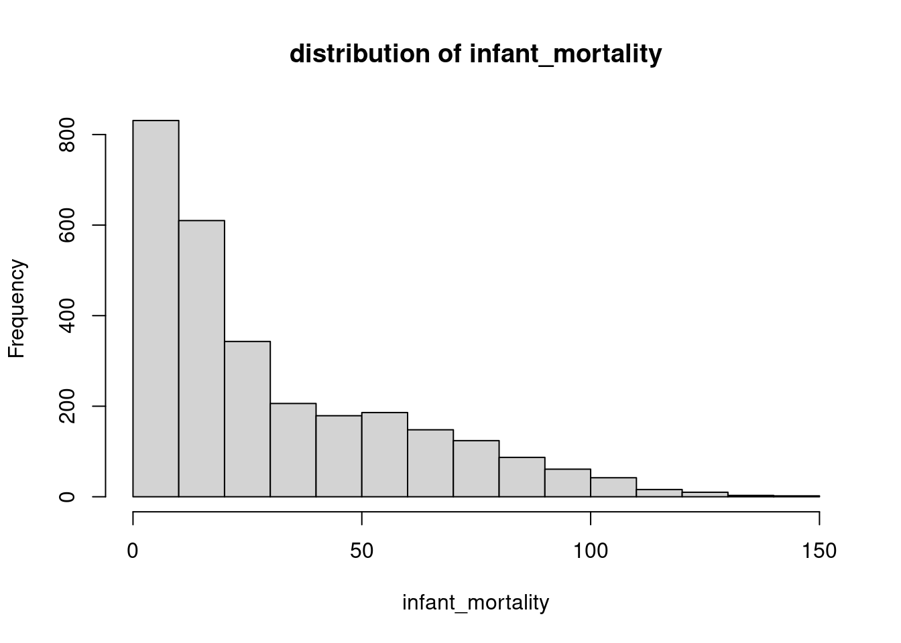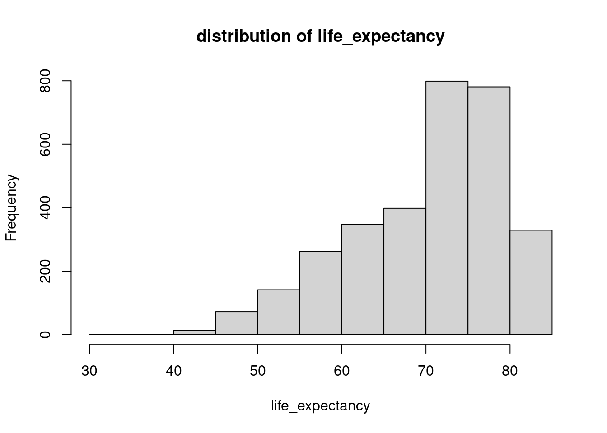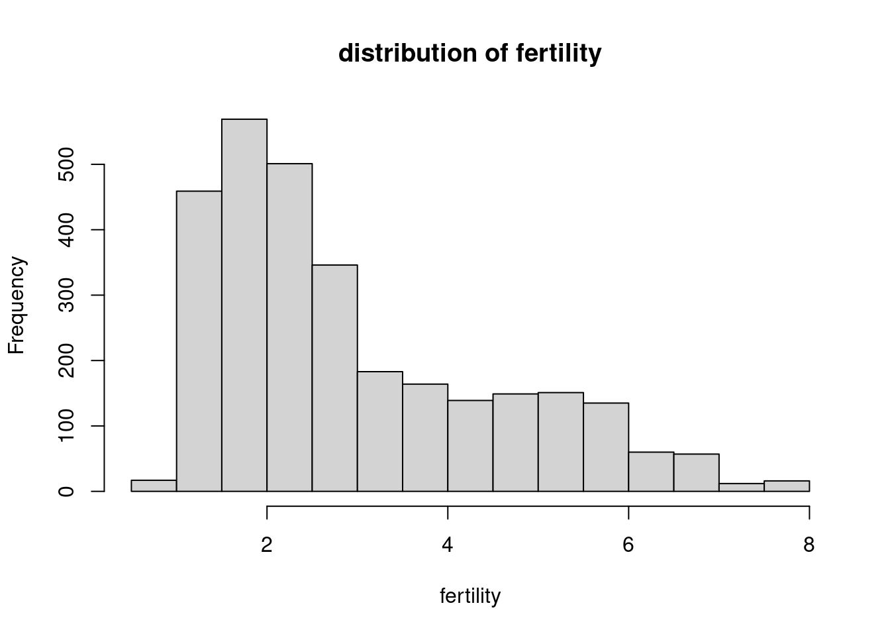

Metrics over time
Here we checked the distribution of data over time. To have a better
visualization, we log-transformed the data. In order to control for
0 values we added 1 unit to each query
(log10 + 1).
library(reshape2)
library(tidyverse)## ── Attaching core tidyverse packages ──────────────────────── tidyverse 2.0.0 ──
## ✔ forcats 1.0.0 ✔ readr 2.1.5
## ✔ ggplot2 3.5.1 ✔ stringr 1.5.1
## ✔ lubridate 1.9.3 ✔ tibble 3.2.1
## ✔ purrr 1.0.2 ✔ tidyr 1.3.1
## ── Conflicts ────────────────────────────────────────── tidyverse_conflicts() ──
## ✖ dplyr::filter() masks stats::filter()
## ✖ dplyr::lag() masks stats::lag()
## ℹ Use the conflicted package (<http://conflicted.r-lib.org/>) to force all conflicts to become errorsfor(cl in c('infant_mortality', 'life_expectancy', 'fertility', 'population', 'gdp')){
tmp_data <- gapminder |> dplyr::select(year,all_of(cl)) |> pivot_longer( cols = -year, names_to = 'variable', values_to = 'value')
p <- ggplot(tmp_data, aes(x = as.factor(year), y = log10(value + 1))) +
geom_boxplot() +
theme_minimal () +
labs(title = paste0('Distribution of ', cl, ' over years'))
print(p)
}## Warning: Removed 297 rows containing non-finite outside the scale range
## (`stat_boxplot()`).

## Warning: Removed 187 rows containing non-finite outside the scale range
## (`stat_boxplot()`).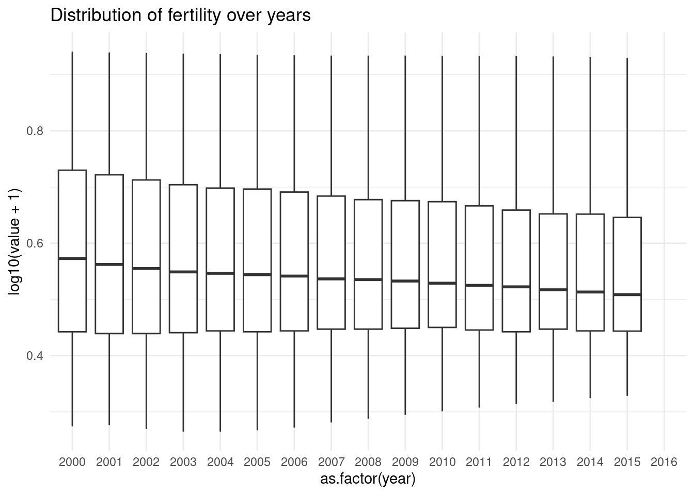
## Warning: Removed 185 rows containing non-finite outside the scale range
## (`stat_boxplot()`).
## Warning: Removed 979 rows containing non-finite outside the scale range
## (`stat_boxplot()`). ### Identifying outlisers. To identify outliers or countries that stand
out, we calculated correlation over time for each coutrny and each
metric.
### Identifying outlisers. To identify outliers or countries that stand
out, we calculated correlation over time for each coutrny and each
metric.
#country_metircs_vec <- paste0(unique(gapminder$country), '_', numeric_vec[-1])
df <- data.frame(Country = NA, Metric = NA, Correlation = NA)[FALSE,]
cntr <- 1
for(cn in unique(gapminder$country)){
tmp_cn <- gapminder |> filter(country == cn)
for(cl in c('infant_mortality', 'life_expectancy', 'fertility', 'population', 'gdp')){
#cat('Analysing ', cn, 'cl')
tmp_data <- tmp_cn |> dplyr::select(year, all_of(cl)) |> pivot_longer( cols = -year, names_to = 'variable', values_to = 'value')
if(sum(is.na(tmp_data$value)) != nrow(tmp_data)){
tmp_data <- tmp_data |> filter(variable == cl)
cor_result = cor(tmp_data$year, tmp_data$value, use = 'complete.obs', method = 'spearman')
}else{
cor_result <- NA
}
df[cntr, ] <- c(cn, cl, cor_result)
cntr <- cntr + 1
}
}
for(cl in c('infant_mortality', 'life_expectancy', 'fertility', 'population', 'gdp')){
tmp_data <- df |> filter(Metric == cl)
hist(as.numeric(tmp_data$Correlation), xlab = 'Correlation', main = paste0('Correlation of ', cl, ' and time'))
}

 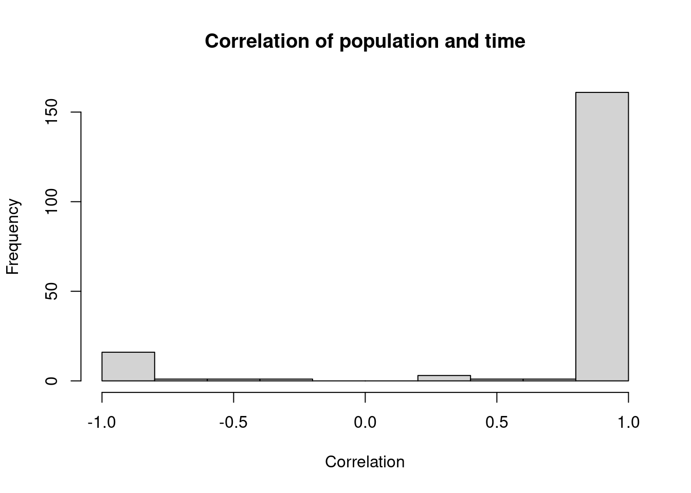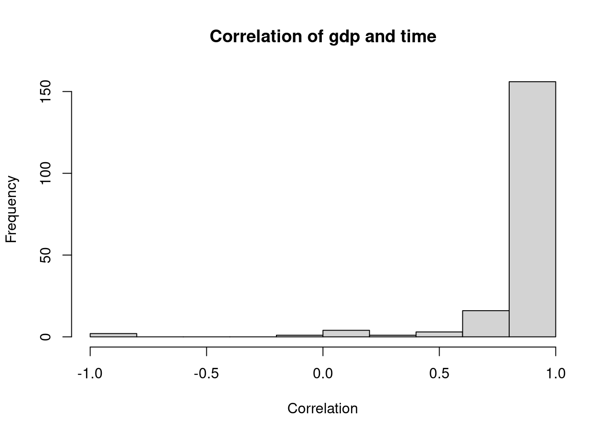
#### Infant mortaility
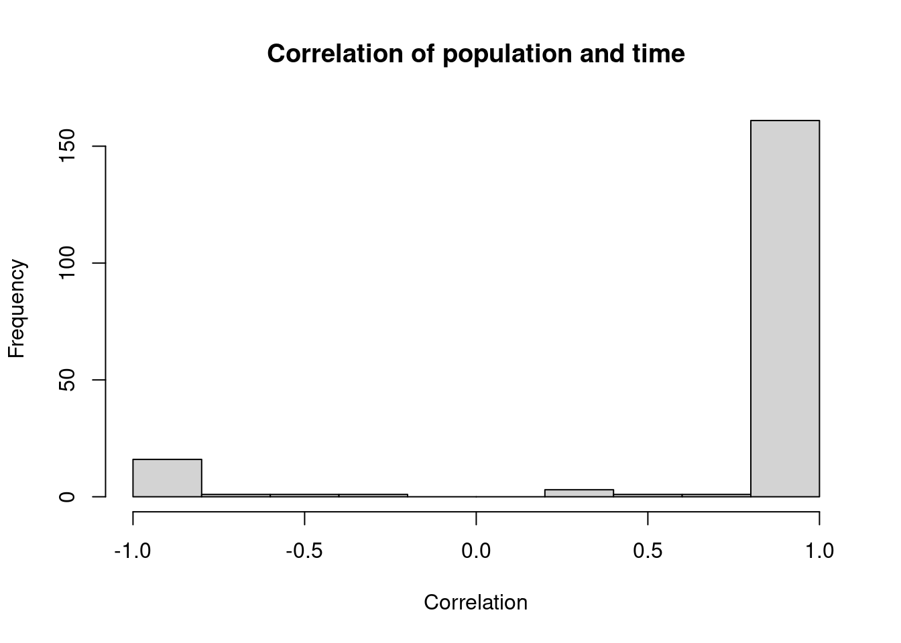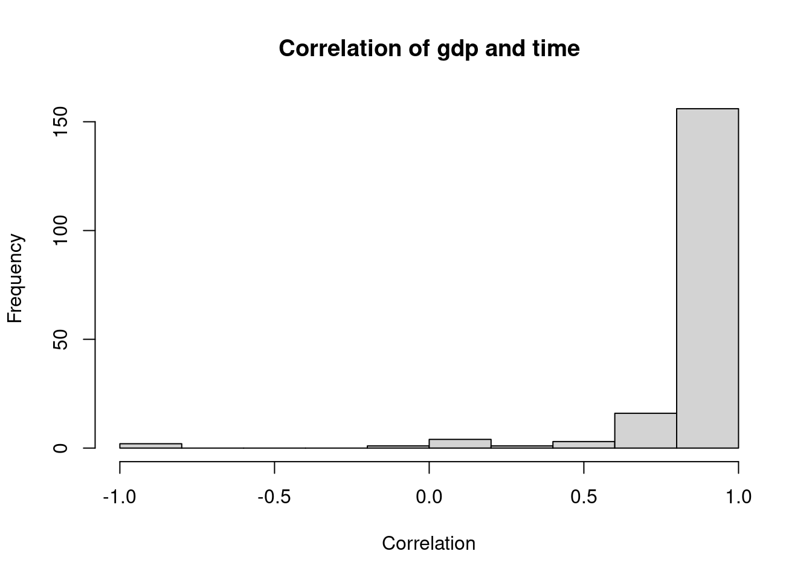
#### Infant mortaility
We checked which countries have infant_mortality
increased overtime by setting a threshold over 50% (0.5).
library(ggplot2)
vars <- c('infant_mortality', 'life_expectancy', 'fertility', 'population', 'gdp')
df <- as_tibble(df)
cn_vec <- df |> filter(Correlation >= 0.5 & Metric == 'infant_mortality') |> select(Country)
cn <- unique(cn_vec$Country)
tmp_cn <- gapminder |> filter(country == cn)
tmp_data <- tmp_cn |> dplyr::select(year, all_of(vars)) |> pivot_longer( cols = -year, names_to = 'variable', values_to = 'value')
ggplot(tmp_data, aes(x = year, y = value, color = variable)) +
geom_point() +
facet_wrap(~variable, scales = "free_y") +
theme_minimal() +
labs(title = paste0("Correlation Plot between Variables over Years ", cn),
x = "Year", y = "Value")## Warning: Removed 9 rows containing missing values or values outside the scale range
## (`geom_point()`).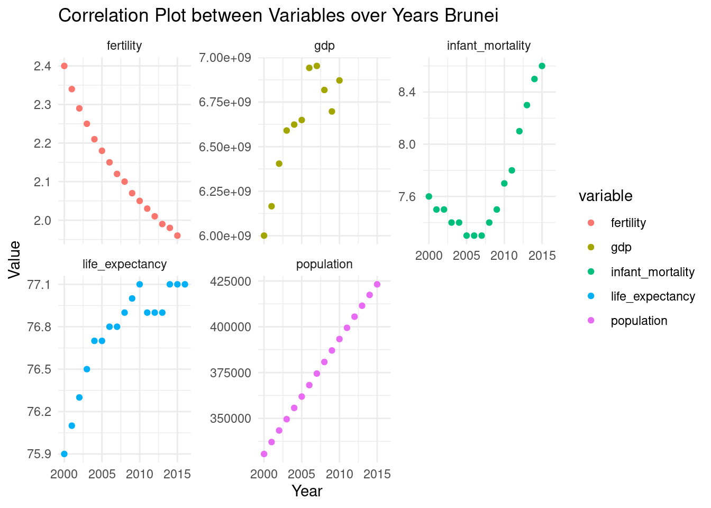
As you can see in Brunei there seem to be a negative correlation between fertility and infant mortality; As the fertility decreases the infant mortality rate has increased around 2005 which seems to coincide with drop in gdp. But gdp data seems to be incomplete.
Life expectency
When we looked at the distribution of life expectancy over time we found a data point which showed lowest lofe expectancy and we further looked into it by first identifying which country it is.
cl <- 'life_expectancy'
tmp_data <- gapminder |> dplyr::select(year,all_of(cl)) |> pivot_longer( cols = -year, names_to = 'variable', values_to = 'value')
p <- ggplot(tmp_data, aes(x = as.factor(year), y = log10(value + 1))) +
geom_boxplot() +
theme_minimal () +
labs(title = paste0('Distribution of ', cl, ' over years'))
# Add a point for the minimum value as an outlier in 2010
p <- p + geom_point(data = data.frame(year = as.factor(2010), value = min(tmp_data$value)),
aes(x = year, y = log10(value + 1)), color = 'red', size = 3)
print(p)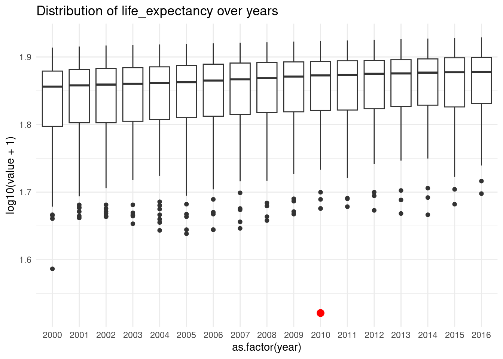
sel_cn <- gapminder |> filter(life_expectancy == min(life_expectancy)) |> select(country) Haiti has the lowest life expactancy on year 2010. Now let’s look at the trend of life expectancy over years in Haiti .
tmp_data <- gapminder |> dplyr::filter(country == sel_cn$country) |> dplyr::select(year,all_of(cl)) |> pivot_longer( cols = -year, names_to = 'variable', values_to = 'value')
ggplot(data = tmp_data, aes(x = as.factor(year), y = value)) + geom_point()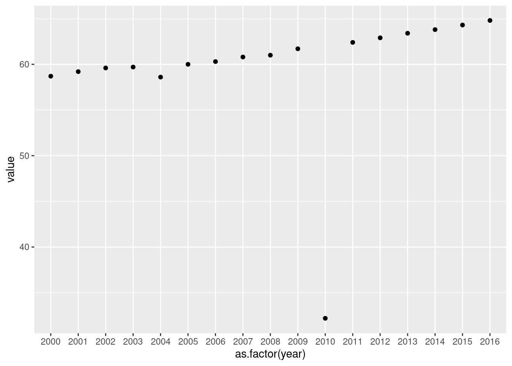
Based on the trend that we see over years, it seems there could me an error in submission of the data or the data is incomplete. Hence, we can remove this datapoint for downstream analysis.
Conclusion
In this project we analysed Gapminder dataset and generated descriptive statistics and some visualisation.
In one example, we identified that despite of overall increase in fertility, gdp and life expectancy the infant mortality increased in Brunei which may coincide with drop in gdp.
We also identified an outlier in life expectancy of Haiti and this datapoint should be removed for downstream analysis.
In summary the knowledge I gained in the course helped me to characterise the data, troubleshoot, identify outliers and generate a report with basic statistics.
Reproducibility
In this project we used following packages:
sessionInfo()## R version 4.4.1 (2024-06-14)
## Platform: x86_64-pc-linux-gnu
## Running under: Ubuntu 22.04.5 LTS
##
## Matrix products: default
## BLAS: /usr/lib/x86_64-linux-gnu/openblas-pthread/libblas.so.3
## LAPACK: /usr/lib/x86_64-linux-gnu/openblas-pthread/libopenblasp-r0.3.20.so; LAPACK version 3.10.0
##
## locale:
## [1] LC_CTYPE=en_US.UTF-8 LC_NUMERIC=C
## [3] LC_TIME=en_US.UTF-8 LC_COLLATE=en_US.UTF-8
## [5] LC_MONETARY=en_US.UTF-8 LC_MESSAGES=en_US.UTF-8
## [7] LC_PAPER=en_US.UTF-8 LC_NAME=C
## [9] LC_ADDRESS=C LC_TELEPHONE=C
## [11] LC_MEASUREMENT=en_US.UTF-8 LC_IDENTIFICATION=C
##
## time zone: Etc/UTC
## tzcode source: system (glibc)
##
## attached base packages:
## [1] stats graphics grDevices utils datasets methods base
##
## other attached packages:
## [1] lubridate_1.9.3 forcats_1.0.0 stringr_1.5.1 purrr_1.0.2
## [5] readr_2.1.5 tidyr_1.3.1 tibble_3.2.1 ggplot2_3.5.1
## [9] tidyverse_2.0.0 reshape2_1.4.4 dplyr_1.1.4
##
## loaded via a namespace (and not attached):
## [1] gtable_0.3.5 jsonlite_1.8.9 compiler_4.4.1 highr_0.11
## [5] tidyselect_1.2.1 Rcpp_1.0.13 jquerylib_0.1.4 scales_1.3.0
## [9] yaml_2.3.10 fastmap_1.2.0 R6_2.5.1 plyr_1.8.9
## [13] labeling_0.4.3 generics_0.1.3 knitr_1.48 munsell_0.5.1
## [17] tzdb_0.4.0 bslib_0.8.0 pillar_1.9.0 rlang_1.1.4
## [21] utf8_1.2.4 cachem_1.1.0 stringi_1.8.4 xfun_0.48
## [25] sass_0.4.9 timechange_0.3.0 cli_3.6.3 withr_3.0.1
## [29] magrittr_2.0.3 digest_0.6.37 grid_4.4.1 hms_1.1.3
## [33] lifecycle_1.0.4 vctrs_0.6.5 evaluate_1.0.0 glue_1.8.0
## [37] farver_2.1.2 colorspace_2.1-1 fansi_1.0.6 rmarkdown_2.28
## [41] tools_4.4.1 pkgconfig_2.0.3 htmltools_0.5.8.1